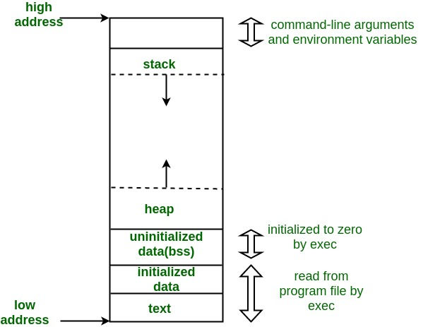
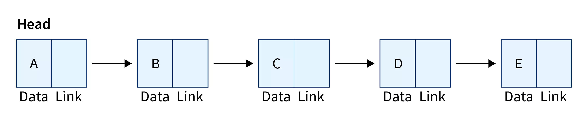

Autore: Davide Daffonchio
Alcuni esercizi sono presi da “Introduzione alla programmazione - eserciziario” dei docenti dell’università di Genova e altri sono stati trovati in rete.
Questo documento è stato creato con il supporto di un’intelligenza artificiale per facilitare la raccolta e l’organizzazione delle informazioni. L’autore ha verificato e integrato le informazioni per garantire accuratezza e coerenza, ma si raccomanda di consultare fonti aggiuntive e di considerare eventuali aggiornamenti successivi alla stesura. L’uso del contenuto è a scopo informativo e didattico.
Ultimo Aggiornamento: 29-04-2025
Stato di revisione
Tutti i capitoli sono stati revisionati
Indice
Capitolo 1: Introduzione alla Programmazione
Cos’è la Programmazione?
La programmazione è il processo di scrittura, verifica e manutenzione di istruzioni che un computer può eseguire per risolvere un problema o realizzare un compito specifico.
Obiettivo della programmazione: tradurre un problema reale in una serie di passi logici, scritti in un linguaggio formale che il calcolatore può comprendere ed eseguire.
Un programma(algoritmo) è quindi una sequenza di istruzioni che determinano il comportamento di un computer.
L’obiettivo di un programmatore non è soltanto quello di risolvere un problema con una serie di istruzioni, ma quello di farlo nel modo più efficiente possibile.
Come elabora le informazioni il computer
Un computer è composto da hardware e software:
Hardware: la parte fisica del computer (CPU, RAM, disco rigido, ecc.).
Software: insieme delle istruzioni che permettono all’hardware di svolgere determinate funzioni.
Funzionamento di Base del Calcolatore
Input: ricezione di dati dall’esterno (tastiera, mouse, file).
Elaborazione: La CPU (Central Processing Unit) esegue le istruzioni di un programma utilizzando il ciclo fetch-decode-execute:
Fetch: recupera l’istruzione dalla memoria RAM.
Decode: interpreta l’istruzione.
Execute: esegue l’operazione richiesta.
Output: invio dei risultati verso un dispositivo (monitor, file).
Linguaggi di Programmazione
Il computer comprende solo 0 e 1. Pertanto ho bisogno di interpreti che trasformino il mio linguaggio in una serie di 0 e 1, ovvero i linguaggi di programmazione.
Un linguaggio di programmazione è un linguaggio formale che permette di scrivere programmi. Si dividono principalmente in:
Linguaggi a basso livello di astrazione:
Vicini al linguaggio macchina (es. Assembly).
Molto efficienti ma difficili da leggere e scrivere.
Linguaggi ad alto livello di astrazione:
Più vicini al linguaggio naturale umano.
Tendenzialmente meno efficienti(meno controllo sulle risorse).
Esempi: C, Python, Java.
Paradigmi di Programmazione
Un paradigma definisce uno stile di programmazione. I principali paradigmi sono:
Programmazione Imperativa: descrive come eseguire un’operazione (sequenza di istruzioni). È il paradigma di programmazione utilizzato in questa dispensa.
Programmazione Dichiarativa: descrive cosa deve essere fatto (es. SQL).
Programmazione Funzionale: basata sulle funzioni matematiche.
Programmazione Orientata agli Oggetti: organizza il codice attorno a “oggetti” che combinano dati e funzioni (è una tipologia specifica di programmazione imperativa)
Compilazione e Interpretazione
Per trasformare un programma scritto in linguaggio ad alto livello in linguaggio macchina, si usano compilatori o interpreti.
Compilatore
La compilazione in C++ è il processo che trasforma il codice sorgente scritto dall’utente in un programma eseguibile. Si compone di quattro fasi principali:
1. Preprocessing
Viene eseguito dal preprocessore (ad es., g++ -E file.cpp).
Elabora direttive come #include, #define, e macro.
Rimuove i commenti e include file di intestazione (.h).
2. Compilazione
Il codice sorgente preprocessato viene tradotto in assembly, un linguaggio di basso livello leggibile dalla macchina.
Questa fase rileva errori di sintassi e di semantica.
Comando: g++ -S file.cpp.
3. Assemblaggio
Il codice assembly viene tradotto in codice oggetto (file binario .o).
Questa fase è gestita dall’assembler.
Comando: g++ -c file.s.
4. Linking
Il linker collega il codice oggetto con eventuali librerie esterne o interne.
Produce il file eseguibile finale.
Comando: g++ file.o.
Comando Completo
Per automatizzare tutte le fasi:
g++ file.cpp
Questo comando genera un file eseguibile chiamato a.out. Se volessi invece dare un nome all’eseguibile, posso usare l’argomento -o:
g++ file.cpp -o programma
In breve, preprocessing → compilazione → assemblaggio → linking portano al programma finale eseguibile.
Esecuzione
Posso infine eseguire l’eseguibile che ho creato:
./programma
Oppure posso usare la concatenazione && per compilare ed eseguire il programma:
g++ file.cpp -o programma && ./programma
Nota
Su linux, . significa la cartella corrente, per cui la notazione ./ significa che il file si trova dentro la cartella in cui mi trovo.
Il processo compilazione di progetti più complessi che includono molteplici files, solitamente in C e C++ si automatizza con un makefile, che sarà un argomento avanzato.
Interprete
Traduce ed esegue il programma mentre lo esegue, istruzione per istruzione.
Esempi di linguaggi interpretati: Python, Java.
Non genera un file eseguibile ma esegue direttamente il codice sorgente.
Compilato vs interpretato
Esempio:
C++ (compilato):
Scrivo il codice.
Compilo il programma con g++ (es. g++ hello.cpp -o hello).
Eseguo il file eseguibile con ./hello.
Python (interpretato):
Scrivo il codice.
Il codice viene eseguito direttamente dall’interprete Python: python hello.py.
Il nostro primo programma
Vediamo il classico esempio “Hello, World!” sia in un linguaggio compilato (C++) che interpretato (Python).
Compiliamo il programma con g++ (es. g++ hello.c -o hello).
Eseguiamo il file eseguibile con ./hello.
Se tutto è andato a buon fine, vedremo a schermo la scritta
Hello, World!
Al momento, possiamo prendere per buone alcune delle cose scritte nel codice, che vedremo nel dettaglio andando più avanti nel corso:
#include <iostream>:
Include il file di intestazione iostream, che contiene le definizioni di funzioni e oggetti per la gestione dello stream di input e output, come std::cout e std::cin.
using namespace std;:
Permette di evitare di scrivere std:: prima di ogni elemento dello standard namespace. Ad esempio, invece di scrivere std::cout, puoi usare semplicemente cout.
int main():
Punto di ingresso del programma. La funzione main() è dove il programma inizia l’esecuzione.
Restituisce un valore di tipo int. Tradizionalmente, restituire 0 indica che il programma è terminato correttamente.
In C++, tutte le funzioni (tra cui il main, che è anch’esso una funzione) e le strutture di controllo di flusso, devono racchiudere il codice all’interno di parentesi graffe.
cout << "Hello, World!" << endl;:
cout è l’output stream standard che scrive dati sulla console.
L’operatore << è utilizzato per inviare i dati allo stream.
"Hello, World!" è una stringa letterale che verrà stampata.
endl è un manipolatore che aggiunge un carattere di nuova linea (\n) e svuota il buffer dello stream.
return 0;:
Restituisce il valore 0 al sistema operativo per indicare che il programma è terminato senza errori.
L’uso di using namespace std; può essere comodo per programmi semplici, ma in programmi più complessi è preferibile usare il prefisso std:: per evitare conflitti di nomi.
Durante il nostro corso, dovremmo utilizzare sempre il namespace std.
Esercizi
Esercizio
Crea un file sorgente che stampi una qualunque stringa di testo. Compilalo ed eseguilo.
Prova ad arrivare al file compilato seguendo invece passo a passo tutte le fasi della compilazione, che file produci? Hai provato ad aprirli per vedere cosa si trova all’interno?
Infine prova a sperimentare cambiando alcune cose all’interno del file sorgente e vedi cosa succede. Se scrivi del codice sbagliato cosa succede? Il compilatore ti aiuta a capire cosa hai sbagliato?
Capitolo 2: Fondamenti della programmazione imperativa
Cos’è la programmazione imperativa?
La programmazione imperativa si basa su un modello in cui le istruzioni vengono eseguite sequenzialmente per modificare lo stato del programma. È come dare ordini sequenziali al computer per eseguire azioni precise.
Le caratteristiche principali sono:
Sequenzialità: le istruzioni vengono eseguite nell’ordine in cui sono scritte.
Modifica dello stato: i valori delle variabili cambiano nel corso del programma.
Controllo del flusso: utilizzo di condizioni e cicli per deviare il percorso.
Esempio semplice in C++:
#include <iostream>using namespace std;int main() { int a = 5; // Dichiarazione di una variabile a = a + 3; // Modifica dello stato cout << a << endl; // Stampa: 8 return 0;}
Commenti
Come abbiamo già visto nell’esempio prima, nel codice posso inserire dei “commenti”. I commenti sono cose che io posso scrivere nel codice senza che queste vengano considerate dal compilatore. Posso quindi usarli per annotare cose, descrivere il funzionamento di parti di codice (senza esagerare), o per disabilitare temporaneamente parti di codice che non voglio che siano eseguite per debugging (il debugging è quella fase in cui testo il programma per cercare errori all’interno del codice e correggerli).
Per fare un commento in una linea aggiungiamo // prima del commento, per farlo multilinea dobbiamo racchiudere il commento tra /* e */ come si vede nel prossimo esempio:
#include <iostream>using namespace std;int main() { int a = 5; // Questo è un commento a = a + 3; // Anche questo è un commento cout << a << endl; // cout << "Ciao!" << endl; <- questa linea di codice non viene eseguita /* questo è un commento su più linee */ return 0;}
Variabili e ai tipi di dati in C++
Le variabili sono contenitori per memorizzare dati. Ogni variabile ha un tipo di dato che definisce il tipo di valore che può contenere e un nome che le identifica univocamente. Questo consente di organizzare e manipolare i dati all’interno di un programma in modo efficiente.
Tipi di dati principali in C++
Tipo
Descrizione
Esempio di assegnazione
int
Numeri interi
int a = 5;
float
Numeri decimali (precisione singola)
float b = 3.14;
double
Numeri decimali (alta precisione)
double c = 2.718;
char
Carattere singolo
char d = 'A';
string
Sequenza di caratteri
string s = "Ciao";
bool
Valori booleani (vero/falso)
bool e = true;
Dichiarazione e assegnazione
Una variabile deve essere dichiarata specificando il tipo e il nome. L’assegnazione consiste nell’attribuire un valore alla variabile:
int numero;numero = 10; // Assegnazione
Oppure dichiarazione e assegnazione possono essere combinate:
int numero = 10;
Assegnazioni possono essere effettuate anche da altre variabili o espressioni:
int a = 5;int b = a; // Assegnazione da un'altra variabileint c = a + b; // Assegnazione da un'espressione
Posso anche creare delle costanti, per valori che non voglio che siano cambiati dopo l’inizializzazione:
const double PI = 3.14159;
Operazioni di base sulle variabili
Incremento e decremento
Le variabili numeriche possono essere incrementate o decrementate utilizzando gli operatori ++ e --:
int x = 5;x++; // Incrementa x di 1 (x diventa 6) equivale a fare x = x + 1x--; // Decrementa x di 1 (x torna a 5)
Operatori di assegnazione combinati
C++ fornisce operatori che combinano assegnazione e operazioni:
int a = 10;a += 5; // Equivale a: a = a + 5 (a diventa 15)a -= 3; // Equivale a: a = a - 3 (a diventa 12)a *= 2; // Equivale a: a = a * 2 (a diventa 24)a /= 4; // Equivale a: a = a / 4 (a diventa 6)a %= 2; // Equivale a: a = a % 2 (a diventa 0)
Esempio completo in C++
Un esempio di utilizzo delle variabili e dei tipi di dato principali:
#include <iostream>#include <string>using namespace std;int main() { int a = 8, b = 3; int somma = a + b; int prodotto = a * b; a += 2; // Incremento combinato string nome = "Mario"; string saluto = "Ciao, " + nome; cout << "Somma: " << somma << endl; cout << "Prodotto: " << prodotto << endl; cout << "Nuovo valore di a: " << a << endl; cout << saluto << endl; return 0;}
Da questo esempio notiamo come posso anche “sommare” le stringhe. In verità questa operazione si chiama concatenazione, e unisce due stringhe in una stringa unica.
Input e Output da console
Per interagire con l’utente, utilizziamo cin per l’input e cout per l’output.
#include <iostream>using namespace std;int main() { int numero; cout << "Inserisci un numero: "; cin >> numero; cout << "Hai inserito: " << numero << endl; return 0;}
Come vediamo nell’esempio, cin e cout utilizzano rispettivamente >> e << come separatori. Posso concatenare con i separatori di output più stringhe e valori insieme. Posso anche concatenare più input: in tal caso il programma aspetterà più valori da inserire, separati da spazi o dalla pressione del tasto invio.
Caratteri speciali nelle stringhe
Quando utilizzi cout per stampare a schermo, puoi includere caratteri speciali usando il carattere di escape \ per rappresentare simboli o comportamenti particolari. Ecco un elenco dei più comuni:
Carattere speciale
Significato
Esempio
Output
\n
Nuova riga
cout << "Ciao\nMondo";
Ciao Mondo
\t
Tabulazione orizzontale
cout << "Ciao\tMondo";
Ciao Mondo
\\
Barra rovesciata (\)
cout << "C:\\Documenti";
C:\Documenti
\'
Apice singolo
cout << "L\'utente";
L’utente
\"
Apice doppio
cout << "\"C++\" è fantastico!";
”C++” è fantastico!
Esempi pratici:
#include <iostream>using namespace std;int main() { cout << "Esempio di nuova riga:\n"; cout << "Ciao\nMondo" << endl; cout << "\nEsempio di tabulazione:\n"; cout << "Ciao\tMondo" << endl; cout << "\nEsempio di barra rovesciata:\n"; cout << "Percorso: C:\\Documenti\\File" << endl; cout << "\nEsempio di apici:\n"; cout << "L'utente ha detto: \"C++ è fantastico!\"" << endl; cout << "\nEsempio di ritorno a capo:\n"; cout << "12345\rABC" << endl; // Ritorna a inizio riga e sovrascrive return 0;}
Output:
Esempio di nuova riga:
Ciao
Mondo
Esempio di tabulazione:
Ciao Mondo
Esempio di barra rovesciata:
Percorso: C:\Documenti\File
Esempio di apici:
L'utente ha detto: "C++ è fantastico!"
Esempio di ritorno a capo:
ABC45
Operazioni aritmetiche
Le operazioni aritmetiche in C++ seguono i simboli standard:
Operazione
Simbolo
Esempio
Risultato
Addizione
+
5 + 3
8
Sottrazione
-
5 - 3
2
Moltiplicazione
*
5 * 3
15
Divisione
/
6 / 3
2
Modulo
%
5 % 3
2
#include <iostream>using namespace std;int main() { int a = 10, b = 3; cout << "Addizione: " << a + b << endl; cout << "Sottrazione: " << a - b << endl; cout << "Moltiplicazione: " << a * b << endl; cout << "Divisione: " << a / b << endl; cout << "Modulo: " << a % b << endl; return 0;}
In questo esempio notiamo come posso anche inserire direttamente delle espressioni nell’output di cout.
Esempio completo: somma di due numeri
Ecco un esempio che utilizza input, operazioni aritmetiche e output.
#include <iostream>using namespace std;int main() { int num1, num2, somma; // Input cout << "Inserisci il primo numero: "; cin >> num1; cout << "Inserisci il secondo numero: "; cin >> num2; // Operazione somma = num1 + num2; // Output cout << "La somma è: " << somma << endl; return 0;}
Esercizi
Esercizi
Scrivi un programma che riceva in input 3 numeri e ne calcoli la somma e la media.
Calcola l’area di un triangolo dati base e altezza.
Scrivi un programma che converte una temperatura da Celsius a Fahrenheit
Capitolo 3: Strutture di Controllo del Flusso
Introduzione
In un programma imperativo, le strutture di controllo del flusso sono fondamentali per prendere decisioni e ripetere blocchi di codice:
Strutture condizionali: consentono di eseguire porzioni di codice solo se una condizione è soddisfatta.
Strutture iterative (cicli): permettono di ripetere un blocco di istruzioni più volte finché una determinata condizione è soddisfatta (è l’unico modo “legale” che abbiamo per tornare indietro nel codice).
Strutture Condizionali
L’istruzione if
La struttura if consente di eseguire un blocco di codice solo se una condizione è vera.
Sintassi:
if (condizione) { // Blocco di codice eseguito se la condizione è vera}
Esempio: Questo programma stampa Il numero è positivo. solo se l’utente inserisce un numero maggiore di zero.
#include <iostream>using namespace std;int main() { int numero; cout << "Inserisci un numero: "; cin >> numero; if (numero > 0) { // Condizione cout << "Il numero è positivo." << endl; // blocco di codice eseguito solo se la condizione è soddisfatta } return 0;}
L’istruzione if-else
L’istruzione if-else aggiunge un percorso alternativo se la condizione è falsa.
if (condizione) { // Codice eseguito se la condizione è vera} else { // Codice eseguito se la condizione è falsa}
Nota
Quando utilizziamo delle espressioni logiche (le useremo soprattutto all’interno delle condizioni), dobbiamo ricordarci che “diverso da” si indica con != e “uguale a” si indica con ==. Il singolo = serve esclusivamente per fare le assegnazioni, quindi ha un significato diverso da quello matematico, che per noi è il doppio uguale.
Esempio:
#include <iostream>using namespace std;int main() { int numero; cout << "Inserisci un numero: "; cin >> numero; if (numero % 2 == 0) { cout << "Il numero è pari." << endl; } else { cout << "Il numero è dispari." << endl; } return 0;}
Esercizio
Cosa ti aspetti che succeda se togli il blocco else e metti cout << "Il numero è dispari." << endl; fuori dal blocco if?
L’istruzione if-else if
Quando si devono valutare più condizioni, si utilizza l’istruzione if-else if.
Sintassi:
if (condizione1) { // Codice eseguito se condizione1 è vera} else if (condizione2) { // Codice eseguito se condizione2 è vera}else if (condizione3) { // Codice eseguito se condizione3 è vera}//...else { // Codice eseguito se nessuna condizione è vera}
Posso inserire tutte le condizioni che voglio, attenzione tuttavia che se ne inserisco troppe, probabilmente devo usare una struttura più avanzata (non le useremo in questo corso), come ad esempio una struttura dati dizionario.
Esempio:
#include <iostream>using namespace std;int main() { int numero; cout << "Inserisci un numero: "; cin >> numero; if (numero > 0) { cout << "Il numero è positivo." << endl; } else if (numero < 0) { cout << "Il numero è negativo." << endl; } else { cout << "Il numero è zero." << endl; } return 0;}
L’istruzione switch
L’istruzione switch è una istruzione equivalente a if-else ifutile quando si devono confrontare i valori di una variabile con più casi specifici.
Sintassi:
switch (espressione) { case valore1: // Codice da eseguire se espressione == valore1 break; case valore2: // Codice da eseguire se espressione == valore2 break; default: // Codice eseguito se nessun caso corrisponde}
Esempio:
#include <iostream>using namespace std;int main() { int giorno; cout << "Inserisci un numero (1-7) per il giorno della settimana: "; cin >> giorno; switch (giorno) { case 1: cout << "Lunedì" << endl; break; case 2: cout << "Martedì" << endl; break; case 3: cout << "Mercoledì" << endl; break; case 4: cout << "Giovedì" << endl; break; case 5: cout << "Venerdì" << endl; break; case 6: cout << "Sabato" << endl; break; case 7: cout << "Domenica" << endl; break; default: cout << "Numero non valido!" << endl; } return 0;}
Il break (che posso anche usare per interrompere manualmente un ciclo) è necessario ad ogni istruzione in questo caso, poiché lo switch esegue l’istruzione corrispondente al valore, ma poi esegue anche tutte quelle sottostanti. In rari casi posso omettere il break se questo comportamento è voluto.
Esercizio
Nel codice precedente, prova a rimuovere i break e guarda cosa succede.
Operatore ternario
L’operatore ternario è un costrutto che permette di esprimere una scelta condizionale in una singola espressione. La sua sintassi è la seguente:
In pratica, la condizione viene valutata: se risulta vera, viene eseguita e restituita l’espressione_se_vera; altrimenti, viene eseguita e restituita l’espressione_se_falsa.
Vantaggi e utilizzi
Compattezza: consente di scrivere in modo più sintetico delle semplici strutture condizionali, evitando blocchi if-else più lunghi.
Espressività: essendo un’espressione, può essere usata direttamente in assegnazioni o in altre espressioni complesse. Ad esempio:
int absValue = (x >= 0) ? x : -x;
Questo codice assegna a absValue il valore assoluto di x senza dover ricorrere a una struttura if-else.
Considerazioni
Leggibilità: per condizioni troppo complesse o annidate, l’uso dell’operatore ternario può ridurre la chiarezza del codice. In questi casi, è preferibile utilizzare le strutture condizionali tradizionali.
Precedenza: l’operatore ternario ha una precedenza relativamente bassa, quindi a volte può essere necessario usare le parentesi per assicurare l’ordine di valutazione desiderato.
L’operatore ternario è quindi un utile strumento per semplificare il codice, purché venga utilizzato in contesti in cui la condizione e le espressioni coinvolte rimangano facilmente comprensibili.
Espressioni logiche e algebra di Boole
Dopo aver visto esempi semplici con condizioni singole, possiamo combinare insieme più condizioni semplici per ottenerne di più complesse attraverso gli operatori logici e l’algebra di Boole.
Tabelle di verità dell’algebra di Boole
L’algebra di Boole è alla base delle espressioni logiche:
0 rappresenta false (falso)
1 rappresenta vero (true)
A
B
A AND B
A OR B
NOT A
0
0
0
0
1
0
1
0
1
1
1
0
0
1
0
1
1
1
1
0
I connettivi logici di base funzionano esattamente come il linguaggio naturale che utilizziamo per parlare:
AND: tradotto in italiano come “e”, assume valore vero solo se entrambe le espressioni sono vere, ad esempio l’espressione “Ho una maglietta gialle e (and) ho i pantaloni neri” è vera soltanto se vesto sia una maglietta gialla che i pantaloni neri. Se avessi la maglietta gialla e i pantaloni verdi sarebbe falsa.
OR: tradotto in italiano come “o”, assume valore vero solo se almeno una o tutte le espressioni della frase sono vere, ad esempio l’espressione “Ho una maglietta gialle o (or) ho i pantaloni neri” è vera sia che vesta una maglietta gialla e i pantaloni neri sia che vesta la maglietta gialla e i pantaloni verdi. Sarebbe falsa solo se avessi ad esempio la maglia rossa e i pantaloni verdi.
NOT: inverte il valore di verità dell’espressione, tradotto in italiano come “non”, ad esempio fuori non(not) piove è vera se il valore piove è falso, mentre assume valore falso se il valore di piove è vero.
Cosi come gli operatori nelle espressioni matematiche, anche i connettivi logici hanno precedenze diverse. Gli ordini di precedenza sono not→and→or. Pertanto se avessi una espressione A or B and not C, verrà valutato prima not C, poi B and not C e infine il risultato messo in or con A.
Posso usare le parentesi come nelle espressioni matematiche per cambiare le precedenze, ricorda tuttavia che posso usare solo parentesi tonde anche una dentro l’altra (graffe e quadre servono per altre cose).
Esempi pratici in C++
Condizione con AND (&& o and):
#include <iostream>using namespace std;int main() { int eta; cout << "Inserisci la tua età: "; cin >> eta; if (eta >= 18 and eta <= 65) { cout << "Sei in età lavorativa." << endl; } else { cout << "Non sei in età lavorativa." << endl; } return 0;}
Condizione con OR (|| o or):
#include <iostream>using namespace std;int main() { char lettera; cout << "Inserisci una lettera: "; cin >> lettera; if (lettera == 'a' or lettera == 'e' or lettera == 'i' or lettera == 'o' or lettera == 'u') { cout << "Hai inserito una vocale!" << endl; } else { cout << "Non è una vocale." << endl; } return 0;}
Uso del NOT (! o not):
#include <iostream>using namespace std;int main() { bool piove = true; // posso salvare valori (anche risultati di espressioni) booleani in variabili di tipo bool if (!piove) { cout << "Esco senza ombrello." << endl; } else { cout << "Porto l’ombrello." << endl; }): return 0;}
Combinare più condizioni
Puoi combinare più espressioni logiche per creare condizioni ancora più complesse
#include <iostream>using namespace std;int main() { int a, b; cout<<"Inserisci a e b"<<endl; cin>>a>>b; if (a > 0 and b > 0 or a == b) { cout << "Le condizioni sono soddisfatte." << endl; } else { cout << "Le condizioni NON sono soddisfatte." << endl; } return 0;}
Esercizio
Come faccio in questo codice a soddisfare la condizione inserendo in input due numeri negativi?
Boolean playground
Sperimenta liberamente con questo codice per capire come funzionano le espressioni booleane (e rispetta i miei capelli):
#include <iostream>#include <cstdlib>using namespace std;void clear(){ #ifdef _WIN32 std::system("cls"); #else // Assume POSIX std::system ("clear"); #endif}/* run this program using the console pauser or add your own getch, system("pause") or input loop */int main(int argc, char** argv) { // nota: in booleano, true (vero) equivale a 1 e false (falso) equivale a 0 // == sta per uguale, != sta per diverso. Attenzione a non confondersi con = che significa assegnazione cout<<"L'espressione 1==3 vale: "<< (1==3) <<endl; cout<<"L'espressione 1==1 vale: "<< (1==1) <<endl; cout<<"L'espressione 1!=3 vale: "<< (1!=3) <<endl; cout<<"L'espressione 1!=1 vale: "<< (1!=1) <<endl; cout<<"L'espressione 1<3 vale: "<< (1<3) <<endl; cout<<endl; //i capelli del prof bool capelli_scuri = true; //not capelli_scuri sta per capelli biondi bool capelli_corti = true; // not capelli_corti sta per capelli lunghi //and (in italiano: e): e' vero solo quando tutti i valori dell'espressione sono veri cout<<"Il prof ha i capelli corti e scuri: "<<(capelli_corti and capelli_scuri)<<endl; cout<<"Il prof ha i capelli corti e biondi: "<<(capelli_corti and not capelli_scuri)<<endl; cout<<"Il prof ha i capelli lunghi e scuri: "<<(not capelli_corti and capelli_scuri)<<endl; cout<<"Il prof ha i capelli lunghi e biondi: "<<(not capelli_corti and not capelli_scuri)<<endl; cout<<endl; //or (in italiano: o): e' falso solo quando tutti i valori dell'espressione sono falsi cout<<"Il prof ha i capelli corti o scuri: "<<(capelli_corti or capelli_scuri)<<endl; cout<<"Il prof ha i capelli corti o biondi: "<<(capelli_corti or not capelli_scuri)<<endl; cout<<"Il prof ha i capelli lunghi o scuri: "<<(not capelli_corti or capelli_scuri)<<endl; cout<<"Il prof ha i capelli lunghi o biondi: "<<(not capelli_corti or not capelli_scuri)<<endl; cout<<endl; //posso utilizzare le parentesi come in un'espressione matematica, ad esempio: cout<<"Non e' vero che il prof ha i capelli lunghi e biondi: "<<not(not capelli_corti or not capelli_scuri)<<endl; cout<<endl; //le espressioni booleane sono utili per fare condizioni piu' complesse //proviamo con un quiz cout<<"Premi invio per continuare..."<<endl; cin.get(); // usiamo questo tipo di cin per mettere in pausa il programma finche l'utente non preme invio clear(); int primaRisposta; //vanno dichiarate fuori dal ciclo se le uso come condizioni int secondaRisposta; bool primaVolta=true; do{ if (not primaVolta){ cout<<"Risposta errata, riprova!"<<endl; } primaVolta=false; cout<<"Di che lunghezza sono i capelli del prof?"<<endl; cout<<"1) Corti"<<endl; cout<<"2) Lunghi"<<endl; cin>>primaRisposta; cout<<"Di che colore sono i capelli del prof?"<<endl; cout<<"1) Biondi"<<endl; cout<<"2) Scuri"<<endl; cin>>secondaRisposta; clear(); } while (not (primaRisposta==1 and secondaRisposta==2)); //se non e' vero che primaRisposta equivale a 1 e secondaRisposta equivale a 2 ripeti il ciclo cout<<"Risposta esatta!"<<endl; return 0;}
Nota
Nel codice è presente un ciclo, non li abbiamo ancora visti ma sono il prossimo argomento che leggerai. È anche presente una funzione (altro argomento che faremo) che richiama una funzione di sistema.
Esercizio su espressioni booleane
Questo esercizio permette di sperimentare con l’algebra booleana e anche di capire alcuni fondamenti di programmazione:
Esercizio
Scrivere un programma che, per ciascuna di queste frasi, stampa la frase seguita dal simbolo = e da un’espressione booleana che calcola il suo valore di verità.
Suggerimento
Per stampare i booleani come true e false invece che come 1 e 0 si deve impostare a true il flag boolalpha di cout. Per fare questo si usa la stessa sintassi della stampa, ovvero si deve “stampare” un comando, come segue: std::cout << std::boolalpha
• tre è maggiore di uno
• quattro diviso due è minore di zero
• il carattere “zero” è uguale al valore zero
• dieci mezzi è compreso fra zero escluso e dieci incluso (ossia: dieci mezzi è maggiore di zero E dieci mezzi è minore o uguale a dieci)
• non è vero che tre è maggiore di due e minore di uno
• tre minore di meno cinque implica sette maggiore di zero
Esercizi su strutture condizionali
Esercizi
Positivo, Negativo o Zero
Scrivi un programma che chiede all’utente di inserire un numero e stampa se è positivo, negativo o zero. Obiettivo: Usare if-else if con più condizioni.
Controllo dell’età
Scrivi un programma che chiede all’utente di inserire la sua età. Se è minore di 18, stampa “Minorenne”. Se è tra 18 e 65, stampa “Adulto”. Altrimenti, stampa “Anziano”. Obiettivo: Utilizzare if-else if e l’operatore logico &&.
Calcolatrice con switch
Scrivi un programma che implementa una semplice calcolatrice. Chiedi all’utente di inserire due numeri e un’operazione (+, -, *, /) e calcola il risultato utilizzando switch. Obiettivo: Praticare l’uso di switch con un caso default per gestire operazioni non valide.
Verifica multipla con operatori logici
Scrivi un programma che chiede all’utente di inserire due numeri interi a e b.
Stampa:
“Entrambi positivi” se entrambi i numeri sono maggiori di zero.
“Uno positivo” se solo uno è maggiore di zero.
“Entrambi negativi o zero” altrimenti. Obiettivo: Combinare operatori logici && e ||.
Quiz sul giorno della settimana
Scrivi un programma che chiede all’utente di inserire un numero tra 1 e 7 e stampa il giorno corrispondente (1 = Lunedì, 2 = Martedì, …, 7 = Domenica). Estensione: Se il numero non è compreso tra 1 e 7, stampa “Errore: numero non valido”. Obiettivo: Usare switch con casi numerici e un caso default.
Cicli e Iterazioni
I cicli servono per ripetere blocchi di codice, e sono l’unico modo che ho per ripetere del codice (in quanto i salti incondizionati sono fortemente sconsigliati). Ne ho di 3 di tipo diverso in base al mio obiettivo:
Il ciclo for
Il ciclo for è usato per ripetere un blocco di codice un numero specifico di volte.
Sintassi:
for (inizializzazione; condizione; incremento) { // Blocco di codice da ripetere}
Esempio: Stampare i numeri da 1 a 5.
#include <iostream>using namespace std;int main() { for (int i = 1; i <= 5; i++) { cout << i << " "; } cout<<endl; return 0;}
Il ciclo while
Il ciclo while ripete un blocco di codice finché una condizione è vera. In questo caso, a differenza del ciclo for, non so effettivamente quante volte verrà eseguito il blocco di codice.
Sintassi:
while (condizione) { // Blocco di codice da ripetere}
Esempio: Chiedere all’utente di inserire il numero 5 finché non lo inserisce.
#include <iostream>using namespace std;int main() { int numero = 3; while(numero != 5){ cout<<"Finche non inserisci il numero 5 io continuo a chiedertelo"<<endl; cin>>numero; } cout<<"Finalmente!"<<endl; return 0;}
Nota
In questo esempio ho inizializzato la variabile numero a 3 per essere sicuro di entrare nel ciclo (poiché alla prima iterazione 3 != 5 è vero). Se non inizializzo la variabile, alcuni linguaggi di programmazione la inizializzano automaticamente a 0, altri a 1, altri con numeri completamente casuali a seconda dell’indirizzo di memoria. Prova con diversi linguaggi di programmazione e prova a stampare una variabile non inizializzata per vedere cosa succede!
Il ciclo do-while
Il ciclo do-while è simile al while, ma garantisce che il blocco di codice venga eseguito almeno una volta.
Sintassi:
do { // Blocco di codice da ripetere} while (condizione);
Esempio:
#include <iostream>using namespace std;int main() { int numero; do{ cout<<"Finche non inserisci il numero 5 io continuo a chiedertelo"<<endl; cin>>numero; }while(numero != 5); cout<<"Finalmente!"<<endl; return 0;}
Esercizio
In questo caso non ho bisogno di inizializzare la variabile. Perché?
Quale uso?
Il ciclo for serve quando conosco a priori quante interazioni farò (che può dipendere da un numero assoluto, da una variabile, dal risultato di una espressione o di una formula ecc…).
I cicli do-while e while servono quando non conosco a priori il numero di interazioni (e dunque la condizione dipende dalle azioni dell’utente), in particolare:
while nei casi in cui non devo fare neanche una interazione se la condizione non è rispettata, poiché viene controllata prima del blocco di codice.
do-while nei casi in cui devo fare almeno una interazione prima del controllo della condizione, poiché questa viene controllata dopo il blocco di codice. Questo è particolarmente utile quando la condizione viene aggiornata direttamente all’interno del blocco di codice prima di essere inizializzata, ad esempio se devo controllare una password inserita dall’utente.
break e continue nei cicli
All’interno di un ciclo, posso utilizzare i comandi break e continue per controllare il flusso di esecuzione in modo più preciso.
Il comando break break interrompe immediatamente l’esecuzione del ciclo, uscendo completamente da esso indipendentemente dalla condizione. È utile quando voglio fermare un ciclo manualmente per qualche motivo.
Esempio: Chiedere all’utente se vuole continuare o uscire dal ciclo.
#include <iostream>using namespace std;int main() { for (int i = 1; i <= 100; i++) { // Ciclo che può teoricamente contare fino a 100 cout << i << endl; char scelta; cout << "Vuoi continuare? (s/n): "; cin >> scelta; if (scelta == 'n' || scelta == 'N') { cout << "Hai scelto di uscire dal ciclo." << endl; break; // Esce dal ciclo } } return 0;}
Esercizio
Riesci a usare la variabile scelta dopo che sei uscito dal ciclo? Come mai? Approfondisci sugli “scopes” delle variabili per avere una risposta.
Il comando continue continue interrompe l’iterazione corrente e salta direttamente alla successiva. È utile quando voglio ignorare il resto del blocco di codice per una determinata condizione, ma continuare il ciclo.eseguibile
Esempio: Stampare solo numeri dispari.
#include <iostream>using namespace std;int main() { for (int i = 1; i <= 10; i++) { if (i % 2 == 0) { continue; // Salta il resto del codice in questa iterazione } cout << i << " "; } return 0;}
Confronto tra break e continue
breakesce completamente dal ciclo.
continuesalta solo l’iterazione corrente, ma il ciclo continua.
Esercizi sui cicli
Esercizi
Somma dei numeri positivi
Scrivi un programma che chiede all’utente di inserire numeri interi uno alla volta. Il programma termina quando l’utente inserisce un numero negativo e stampa la somma di tutti i numeri positivi inseriti. Obiettivo: Utilizzare un ciclo while con una condizione logica.
Tabelline
Scrivi un programma che chiede all’utente di inserire un numero intero e stampa la sua tabellina (moltiplicazione da 1 a 10).
Obiettivo: Usare un ciclo for per iterazioni fisse.
Indovina il numero
Scrivi un programma che genera un numero casuale tra 1 e 100. L’utente deve indovinarlo inserendo numeri finché non trova quello corretto. Dopo ogni tentativo, il programma deve dire se il numero inserito è più alto o più basso di quello da indovinare. Obiettivo: Usare un ciclo do-while con una condizione e operatori logici.
Numero primo
Scrivi un programma che chiede all’utente di inserire un numero intero e verifica se è un numero primo. Obiettivo: Usare cicli annidati e condizioni logiche.
Fibonacci
Scrivi un programma che calcola e stampa i primi n numeri della sequenza di Fibonacci. n è dato in input dall’utente. Obiettivo: Utilizzare un ciclo for per una sequenza iterativa.
Capitolo 4: Strutture Dati di Base
Introduzione
Le strutture dati sono entità usate per organizzare insiemi di dati nella memoria in modo strutturato. Nel paradigma imperativo con C++, le strutture dati di base includono:
Array
Stringhe
Struct
In questo capitolo analizzeremo ciascuna di queste strutture, mostrando esempi pratici di implementazione.
Array in C++
Gli array sono una struttura dati fondamentale che permette di memorizzare una collezione di valori dello stesso tipo, organizzati in modo contiguo in memoria. Gli array sono utili quando è necessario lavorare con più dati correlati.
Dichiarazione e inizializzazione
Un array in C++ si dichiara specificando il tipo di dati, il nome e la dimensione. La dimensione deve essere un valore intero positivo.
Sintassi:
tipo nome_array[dimensione];
Esempi:
int numeri[5]; // Array di 5 interi, non inizializzatoint voti[3] = {8, 9, 10}; // Array di 3 interi inizializzatifloat decimali[4] = {1.2, 3.4, 5.6, 7.8}; // Array di 4 float inizializzatichar lettere[3] = {'A', 'B', 'C'}; // Array di 3 caratteri (somiglia a qualcosa?)
Se non si specificano tutti i valori, gli elementi rimanenti sono impostati a 0:
int numeri[5] = {1, 2}; // Array: {1, 2, 0, 0, 0}
Accesso agli elementi
Gli elementi di un array sono indicizzati a partire da 0. È possibile accedervi utilizzando il nome dell’array e un indice tra parentesi quadre.
Esempio:
#include <iostream>using namespace std;int main() { int numeri[5] = {10, 20, 30, 40, 50}; cout << "Il primo elemento è: " << numeri[0] << endl; // 10 cout << "Il terzo elemento è: " << numeri[2] << endl; // 30 // Modifica di un elemento numeri[1] = 25; cout << "Il secondo elemento modificato è: " << numeri[1] << endl; // 25 return 0;}
Nota
Accedere a un indice fuori dai limiti dell’array può causare comportamenti imprevedibili, perché il compilatore non esegue controlli automatici sui limiti.
Array e cicli
Gli array sono spesso utilizzati con i cicli per elaborare tutti gli elementi in modo efficiente. Spesso si usa un ciclo for per scorrere tutti gli elementi di un array, mettendo come condizione di uscita la lunghezza dell’array. Questa operazione si chiama scorrimento.
Esempio: Somma di tutti gli elementi di un array:
#include <iostream>using namespace std;int main() { int d=5; int numeri[d] = {10, 20, 30, 40, 50}; int somma = 0; for (int i = 0; i < d; i++) { somma += numeri[i]; } cout << "La somma degli elementi è: " << somma << endl; // 150 return 0;}
Esercizio
Dato un array di numeri interi, ordinalo in ordine crescente. Hai appena creato un algoritmo di ordinamento, ne esistono vari standard, ognuno con le sue caratteristiche. L’algoritmo che hai inventato esiste già? Come si chiama? Prova a descrivere quali algoritmi di ordinamento esistono e come funzionano, poi prova ad implementarli tutti in un unico programma.
Range based for (for-each)
Il ciclo for range-based mi permette di scrivere velocemente un ciclo for per iterare la collezione senza preoccuparmi dei contatori.
In questo esempio viene illustrata la differenza tra il ciclo for tradizionale e il range-based for (chiamato anche for-each) in C++. Utilizzeremo un array normale per mostrare come iterare sugli elementi. Il ciclo for tradizionale usa un contatore (di tipo int) per accedere agli elementi, mentre il range-based for semplifica l’iterazione eliminando la gestione manuale dell’indice.
#include <iostream>using namespace std;int main() { int numbers[] = {1, 2, 3, 4, 5}; int size = sizeof(numbers) / sizeof(numbers[0]); // Ciclo for tradizionale cout << "Traditional for loop: "; for (int i = 0; i < size; i++) { cout << numbers[i] << " "; } cout << endl; // Ciclo range-based for (foreach) cout << "Range-based for loop: "; for (int num : numbers) { cout << num << " "; } cout << endl; return 0;}
Nel primo caso viene utilizzato un indice (di tipo int) per accedere agli elementi dell’array, permettendo un controllo dettagliato dell’iterazione. Nel secondo caso, il ciclo range-based for itera direttamente sugli elementi, semplificando il codice e riducendo il rischio di errori nella gestione dell’indice.
Nelle versioni più recenti di C++, posso utilizzare il tipo di dato auto per inferire automaticamente il tipo di dato dell’elemento che itero dal tipo di dato della collezione.
Array multidimensionali
Gli array possono avere più dimensioni, come una tabella o una matrice.
Sintassi:
tipo nome_array[righe][colonne];
Esempio: Matrice 2x3:
Ecco come scorrere una matrice e stamparne il contenuto in modo ordinato. La struttura con i due for annidati è il classico metodo di scorrimento di una matrice:
#include <iostream>using namespace std;int main() { int matrice[2][3] = { {1, 2, 3}, {4, 5, 6} }; for (int i = 0; i < 2; i++) { for (int j = 0; j < 3; j++) { cout << matrice[i][j] << " "; } cout << endl; } return 0;}
Algoritmi di ordinamento e complessità asintotica (Big O)
Big O
La notazione Big O è uno strumento fondamentale per descrivere la complessità degli algoritmi, cioè come variano il tempo di esecuzione o l’uso della memoria in funzione della dimensione dell’input, soprattutto per valori grandi.
Big O esprime il limite superiore della crescita di una funzione. In altre parole, indica l’ordine di grandezza del tempo (o spazio) necessario man mano che l’input n aumenta. Le costanti e i termini meno significativi vengono ignorati per concentrarsi sul comportamento asintotico.
O(1): Tempo costante. L’algoritmo esegue lo stesso numero di operazioni, indipendentemente dalla dimensione dell’input.
O(n): Tempo lineare. Il numero di operazioni cresce proporzionalmente a n, come in un ciclo che attraversa l’intero array.
O(n²): Tempo quadratico. Tipico di algoritmi con cicli annidati, dove il numero di operazioni è proporzionale al quadrato di n.
O(log n): Tempo logaritmico. L’algoritmo riduce il problema in maniera esponenziale ad ogni iterazione, tipico di ricerche in strutture ordinate (ad esempio, la ricerca binaria).
O(n log n): Complessità intermedia, comune in algoritmi di ordinamento efficienti come Merge Sort e Quick Sort nella media dei casi.
Bubble Sort
L’algoritmo ha complessità O(n²) nel caso medio e peggiore, mentre nel caso migliore (array già ordinato) si comporta in O(n).
#include <iostream>using namespace std;int main() { int arr[] = {64, 34, 25, 12, 22, 11, 90}; int n = sizeof(arr) / sizeof(arr[0]); // Bubble Sort: iterazione esterna per n-1 passate for (int i = 0; i < n - 1; i++) { // Ogni passata posiziona l'elemento massimo al fondo for (int j = 0; j < n - i - 1; j++) { // Confronta elementi adiacenti e scambia se fuori ordine if (arr[j] > arr[j + 1]) { int temp = arr[j]; arr[j] = arr[j + 1]; arr[j + 1] = temp; } } } // Stampa dell'array ordinato for (int i = 0; i < n; i++) { cout << arr[i] << " "; } cout << endl; return 0;}
Selection Sort
L’algoritmo Selection Sort seleziona in ogni iterazione l’elemento minimo dalla parte non ordinata e lo scambia con il primo elemento non ordinato. La complessità è sempre O(n²).
#include <iostream>using namespace std;int main() { int arr[] = {29, 10, 14, 37, 13}; int n = sizeof(arr) / sizeof(arr[0]); // Selection Sort: per ogni posizione, trova il minimo nell'intervallo non ordinato for (int i = 0; i < n - 1; i++) { int min_idx = i; // ipotizza che l'elemento corrente sia il minimo // Cerca il minimo nell'array da i+1 a n-1 for (int j = i + 1; j < n; j++) { if (arr[j] < arr[min_idx]) min_idx = j; } // Scambia l'elemento corrente con il minimo trovato int temp = arr[i]; arr[i] = arr[min_idx]; arr[min_idx] = temp; } // Stampa dell'array ordinato for (int i = 0; i < n; i++) { cout << arr[i] << " "; } cout << endl; return 0;}
Insertion Sort
Insertion Sort costruisce progressivamente una porzione ordinata dell’array, inserendo ogni nuovo elemento nella sua posizione corretta. Ha complessità O(n) nel caso migliore e O(n²) in quello medio/peggiore.
#include <iostream>using namespace std;int main() { int arr[] = {12, 11, 13, 5, 6}; int n = sizeof(arr) / sizeof(arr[0]); // Insertion Sort: a partire dal secondo elemento, inserisce ogni elemento nell'array ordinato a sinistra for (int i = 1; i < n; i++) { int key = arr[i]; // elemento da inserire int j = i - 1; // Sposta gli elementi maggiori di key verso destra per fare spazio while (j >= 0 && arr[j] > key) { arr[j + 1] = arr[j]; j--; } // Inserisce key nella posizione corretta arr[j + 1] = key; } // Stampa dell'array ordinato for (int i = 0; i < n; i++) { cout << arr[i] << " "; } cout << endl; return 0;}
Merge Sort (Iterativo)
Merge Sort divide l’array in sottoarray più piccoli, li ordina e poi li fonde. L’implementazione qui proposta è iterativa e ha complessità O(n log n).
#include <iostream>#include <algorithm> // per std::minusing namespace std;int main() { int arr[] = {38, 27, 43, 3, 9, 82, 10}; int n = sizeof(arr) / sizeof(arr[0]); int temp[100]; // Array temporaneo per la fusione, supponendo n <= 100 // curr_size indica la dimensione corrente dei sottoarray da fondere for (int curr_size = 1; curr_size < n; curr_size *= 2) { // left_start indica l'inizio di ogni coppia di sottoarray da fondere for (int left_start = 0; left_start < n; left_start += 2 * curr_size) { // Calcola il punto medio e l'estremo destro, gestendo i casi in cui la dimensione non sia multipla di curr_size int mid = min(left_start + curr_size, n); int right_end = min(left_start + 2 * curr_size, n); int i = left_start, j = mid, k = left_start; // Fusione dei due sottoarray ordinati in temp[] while (i < mid && j < right_end) { if (arr[i] <= arr[j]) temp[k++] = arr[i++]; else temp[k++] = arr[j++]; } // Copia gli elementi rimanenti del sottoarray sinistro, se presenti while (i < mid) temp[k++] = arr[i++]; // Copia gli elementi rimanenti del sottoarray destro, se presenti while (j < right_end) temp[k++] = arr[j++]; // Copia il risultato della fusione nell'array originale for (int p = left_start; p < right_end; p++) arr[p] = temp[p]; } } // Stampa dell'array ordinato for (int i = 0; i < n; i++) cout << arr[i] << " "; cout << endl; return 0;}
Quick Sort (Iterativo)
Quick Sort utilizza il paradigma divide-et-impera scegliendo un pivot e partizionando l’array. La versione iterativa qui usa uno stack per gestire gli intervalli. La complessità media è O(n log n), mentre il caso peggiore è O(n²).
#include <iostream>#include <stack>using namespace std;int main() { int arr[] = {10, 7, 8, 9, 1, 5}; int n = sizeof(arr) / sizeof(arr[0]); // Stack per memorizzare coppie (inizio, fine) degli intervalli da ordinare stack<pair<int, int>> s; s.push({0, n - 1}); while (!s.empty()) { int l = s.top().first; int h = s.top().second; s.pop(); // Partizione dell'intervallo corrente utilizzando lo schema di Lomuto int pivot = arr[h]; // Si sceglie l'ultimo elemento come pivot int i = l - 1; // Indice dell'ultimo elemento minore del pivot for (int j = l; j <= h - 1; j++) { if (arr[j] < pivot) { i++; // Scambia arr[i] e arr[j] int temp = arr[i]; arr[i] = arr[j]; arr[j] = temp; } } // Posiziona il pivot nella posizione corretta int p = i + 1; int temp = arr[p]; arr[p] = arr[h]; arr[h] = temp; // Se ci sono elementi a sinistra del pivot, li aggiunge allo stack if (p - 1 > l) s.push({l, p - 1}); // Se ci sono elementi a destra del pivot, li aggiunge allo stack if (p + 1 < h) s.push({p + 1, h}); } // Stampa dell'array ordinato for (int i = 0; i < n; i++) cout << arr[i] << " "; cout << endl; return 0;}
Heap Sort
Heap Sort sfrutta un max heap per ordinare l’array. Dopo aver costruito il max heap (complessità O(n)), estrae ripetutamente il massimo e ricostruisce il heap, ottenendo una complessità complessiva O(n log n).
#include <iostream>using namespace std;int main() { int arr[] = {12, 11, 13, 5, 6, 7}; int n = sizeof(arr) / sizeof(arr[0]); // Costruzione del max heap: // Partiamo dall'ultimo nodo non foglia: n/2 - 1 e andiamo a ritroso for (int i = n / 2 - 1; i >= 0; i--) { int root = i; // Heapify: corregge la struttura del heap per il nodo corrente while (true) { int left = 2 * root + 1; // indice del figlio sinistro int right = 2 * root + 2; // indice del figlio destro int largest = root; if (left < n && arr[left] > arr[largest]) largest = left; if (right < n && arr[right] > arr[largest]) largest = right; // Se il nodo corrente non è il più grande, scambia e continua l'heapify if (largest != root) { int temp = arr[root]; arr[root] = arr[largest]; arr[largest] = temp; root = largest; } else { break; } } } // Ordinamento: estrae ripetutamente il massimo e ricostruisce il max heap for (int i = n - 1; i > 0; i--) { // Scambia la radice (massimo) con l'ultimo elemento dell'heap int temp = arr[0]; arr[0] = arr[i]; arr[i] = temp; int heap_size = i; // Riduce la dimensione del heap int root = 0; // Heapify per ripristinare il max heap nella parte rimanente while (true) { int left = 2 * root + 1; int right = 2 * root + 2; int largest = root; if (left < heap_size && arr[left] > arr[largest]) largest = left; if (right < heap_size && arr[right] > arr[largest]) largest = right; if (largest != root) { int temp = arr[root]; arr[root] = arr[largest]; arr[largest] = temp; root = largest; } else { break; } } } // Stampa dell'array ordinato for (int i = 0; i < n; i++) cout << arr[i] << " "; cout << endl; return 0;}
Considerazioni Finali
Ogni algoritmo ha vantaggi e svantaggi in termini di complessità computazionale e utilizzo della memoria.
Bubble, Selection e Insertion Sort: Semplici da implementare ma inefficienti per grandi dataset (O(n²)).
Merge, Quick e Heap Sort: Offrono prestazioni migliori (O(n log n) in media), anche se possono richiedere maggiore gestione della memoria o attenzioni particolari (come la scelta del pivot in Quick Sort).
La scelta dell’algoritmo dipende dalle specifiche esigenze e dai vincoli dell’applicazione.
Esercizi sugli Array
Esercizi
Inserimento e stampa
Scrivi un programma che chiede all’utente di inserire 5 numeri interi in un array e li stampa in ordine inverso.
Somma e media
Scrivi un programma che calcola la somma e la media degli elementi di un array.
Trova il massimo e il minimo
Scrivi un programma che trova l’elemento massimo e minimo in un array di numeri interi.
Somma delle righe di una matrice
Scrivi un programma che legge una matrice 3x3 e calcola la somma di ciascuna riga.
Prodotto scalare
Scrivi un programma che calcola il prodotto scalare di due vettori di dimensione n, dove n è fornito dall’utente.
Stringhe
Una stringa in C++ è una sequenza di caratteri terminata dal carattere speciale \0. Esistono due modi principali per lavorare con le stringhe:
Array di caratteri
Classe string della libreria standard
Array di Caratteri
Gli array di caratteri rappresentano una stringa in stile C. Ogni elemento è un carattere e l’ultimo carattere deve essere il terminatore \0.
Senza il carattere \0, il programma potrebbe leggere dati al di fuori della stringa causando comportamenti imprevedibili.
Tuttavia, lavorare con gli array di caratteri è meno intuitivo e richiede l’uso della libreria <cstring> per molte operazioni. Per questo motivo, in C++ moderno è preferibile utilizzare la classe string.
Classe string
La classe string della libreria standard rende il lavoro con le stringhe molto più semplice e intuitivo rispetto agli array di caratteri. Non è necessario preoccuparsi del terminatore \0, e offre numerosi metodi per manipolare le stringhe.
Per utilizzare la classe string, devi includere la libreria <string>.
In C++, per leggere da input una stringa che contiene spazi (come ad esempio "ciao come stai"), non si può usare il classico std::cin >> variabile, perché questo metodo si ferma al primo spazio.
Se utilizzo:
string frase;cin >> frase;
Se l’utente inserisce:
ciao come stai
La variabile frase conterrà solo "ciao".
Il comportamento di cin >> variabile è progettato per leggere una parola alla volta, cioè si ferma su spazi, tabulazioni o invii. È utile per leggere input divisi da spazi (come numeri o parole singole), ma non va bene per intere frasi.
Soluzione: usare getline
Per leggere l’intera riga, inclusi gli spazi, si usa:
string frase;getline(cin, frase);
Questo legge tutti i caratteri fino al carattere di a capo (\n), cioè quando l’utente preme Invio.
Operazioni di Base con la Classe string
Concatenazione di stringhe
Puoi concatenare due stringhe utilizzando l’operatore + o +=. L’operatore + restituisce una nuova stringa concatenata, mentre += modifica la stringa a sinistra aggiungendo quella a destra.
Per la prima volta nei prossimi esempi, vedrai in azione quella che si chiama chiamata di funzione (se vogliamo essere più pignoli, in questo caso si chiamano metodi dato che string è una classe… ma non trattiamo di programmazione orientata agli oggetti in questa dispensa). In uno dei capitoli vedremo cosa sono le funzioni, a cosa servono e come si implementano. Per ora prendile per buone, come se magicamente facessero quello che desideri chiamandole come vedi nel codice e mettendo gli argomenti nell’ordine richiesto.
Accesso ai caratteri
Puoi accedere ai singoli caratteri di una stringa usando l’operatore [] o il metodo at(). Entrambi richiedono come argomento l’indice del carattere (a partire da 0).
#include <iostream>#include <string>using namespace std;int main() { string saluto = "Ciao"; cout << saluto[1] << endl; // Output: i (accesso diretto tramite indice) cout << saluto.at(2) << endl; // Output: a (metodo membro che controlla i limiti) // Nota: `at()` lancia un'eccezione se l'indice è fuori dai limiti. return 0;}
Nota
Con la classe string, in realtà anche l’accesso diretto all’indice si comporta come at, ovvero controlla i limiti. Nei casi invece si usi una cstring classica (array di carattery) allora at e l’accesso diretto si comportano in modo diverso.
Lunghezza della stringa
Usa il metodo length() o size() (sono equivalenti) per ottenere la lunghezza della stringa. Non richiedono argomenti.
Cancellare
Il metodo erase() rimuove una parte della stringa.
Può essere usato in due modi:
Con un solo argomento: rimuove tutti i caratteri dall’indice specificato in poi.
Con due argomenti: specifica l’indice iniziale e il numero di caratteri da rimuovere.
#include <iostream>#include <string>using namespace std;int main() { string saluto = "Ciao, mondo!"; saluto.erase(5); // Rimuovi tutto da indice 5 in poi cout << saluto << endl; // Output: Ciao, saluto = "Ciao, mondo!"; saluto.erase(5, 6); // Rimuovi 6 caratteri a partire dall'indice 5 cout << saluto << endl; // Output: Ciao! return 0;}
Esercizio
Impara ad usare la documentazione. Cerca online la documentazione C++ sulle stringhe, guarda quali funzioni trovi, quali sono le loro signature (combinazione di nome e argomenti). Le hai trovate tutte? Hai trovato altre funzioni utili che vuoi aggiungere? (Continuo a chiamarle funzioni, ma ricorda che in realtà questi sono metodi).
Esercizi sulle Stringhe
Esercizi
Lunghezza della stringa
Scrivi un programma che chiede all’utente di inserire una stringa e stampa la sua lunghezza.
Invertire una stringa
Scrivi un programma che legge una stringa e la stampa al contrario.
Contare i caratteri
Scrivi un programma che conta quante volte un determinato carattere appare in una stringa fornita dall’utente.
Sostituzione di parole
Scrivi un programma che sostituisce tutte le occorrenze di una parola con un’altra in una stringa fornita dall’utente.
Nota
Giocare con le stringhe con input e output da console è utile per imparare come funzionano, ma le cose si fanno sicuramente più interessanti una volta che impariamo ad utilizzare l’input e output da file nel capitolo dedicato.
Struct
Le struct permettono di raggruppare dati di tipi diversi sotto un unico nome. Sono particolarmente utili per rappresentare oggetti complessi, permettendoti di creare a tutti gli effetti un nuovo tipo di dato tuo che rappresenta quell’oggetto complesso. È ciò di più vicino che esiste alle classi, che imparerai ad utilizzare quando programmerai a oggetti.
#include <iostream>using namespace std;struct Persona { string nome; int eta; float altezza;};int main() { Persona p1; // Dichiarazione di una variabile di tipo Persona // Assegnazione dei valori p1.nome = "Mario Rossi"; p1.eta = 20; p1.altezza = 28.5; // Stampa dei valori cout << "Nome: " << p1.nome << endl; cout << "Età: " << p1.eta << endl; cout << "Altezza: " << p1.altezza << endl; return 0;}
Output:
Nome: Mario Rossi
Età: 20
Altezza: 28.5
Nota
Essendo a tutti gli effetti un nuovo tipo di dato, puoi utilizzarli come tali. Quindi puoi ad esempio creare un array di studenti per creare una classe di scuola. Non sei limitato solo a questo, dentro gli array ci puoi mettere altri array, per cui puoi mettere le tue classi scolastiche all’interno di un altro array per creare una scuola. Tutti gli strumenti che hai visto finora possono essere combinati insieme con infinite potenzialità. Cosa vuoi creare di nuovo?
Libera la fantasia
Crea un oggetto molto complesso ed elaboralo utilizzando la fantasia e gli strumenti che hai visto finora.
Esercizi
Esercizi
Gestione di una rubrica
Crea un programma che gestisce una rubrica telefonica utilizzando un array di struct. Ogni contatto deve contenere:
Nome (stringa)
Numero di telefono (stringa)
Email (stringa)
Il programma deve permettere di:
Aggiungere un nuovo contatto.
Cercare un contatto per nome e visualizzarne i dettagli.
Stampare tutti i contatti.
Esempio di output:
1. Aggiungi contatto
2. Cerca contatto
3. Mostra tutti i contatti
4. Esci
Scegli un'opzione: 1
Inserisci nome: Mario Rossi
Inserisci numero di telefono: 123456789
Inserisci email: mario.rossi@email.com
Scegli un'opzione: 3
Contatti:
1. Mario Rossi - 123456789 - mario.rossi@email.com
Analisi di una tabella di studenti
Scrivi un programma che gestisce i dati di una classe. Per ogni studente memorizza:
Nome (stringa)
Cognome (stringa)
Voti di 5 materie (array di interi)
Il programma deve:
Leggere i dati di almeno 5 studenti.
Calcolare la media dei voti per ciascuno studente.
Stampare i dettagli dello studente con la media più alta.
Esempio di output:
Inserisci i dati dello studente 1:
Nome: Luca
Cognome: Bianchi
Voti: 8 9 7 10 9
Inserisci i dati dello studente 2:
Nome: Maria
Cognome: Rossi
Voti: 6 7 8 6 7
Studente con la media più alta:
Luca Bianchi - Media: 8.6
Gestione di un inventario
Crea un programma per gestire l’inventario di un negozio. Ogni prodotto è rappresentato da una struct contenente:
Nome prodotto (stringa)
Quantità (intero)
Prezzo unitario (double)
Il programma deve:
Aggiungere prodotti all’inventario.
Cercare un prodotto per nome e mostrarne i dettagli.
Calcolare il valore totale dell’inventario.
Esempio di output:
1. Aggiungi prodotto
2. Cerca prodotto
3. Calcola valore totale inventario
4. Esci
Scegli un'opzione: 1
Nome prodotto: Laptop
Quantità: 5
Prezzo unitario: 899.99
Scegli un'opzione: 3
Valore totale dell'inventario: 4499.95
Analisi di testo
Scrivi un programma che analizza un paragrafo di testo fornito dall’utente. Il programma deve:
Contare il numero di parole nel testo.
Contare quante volte ogni parola appare (usa un array di struct dove ogni struct contiene una parola e il relativo conteggio).
Stampare l’elenco delle parole con il loro conteggio.
Esempio di output:
Inserisci un testo:
Benvenuti al corso di programmazione. Programmazione è divertente.
Analisi:
Numero totale di parole: 7
Parole e frequenze:
- Benvenuti: 1
- al: 1
- corso: 1
- di: 1
- programmazione: 2
- è: 1
- divertente: 1
Gioco del tris
Implementa il gioco del tris (tic-tac-toe) utilizzando:
Una matrice 3x3 per rappresentare il tabellone.
Stringhe per i nomi dei due giocatori.
Logica per determinare se un giocatore ha vinto o se c’è un pareggio.
Requisiti:
Il programma deve permettere ai giocatori di inserire i propri nomi.
Alternativamente, i giocatori inseriscono la loro mossa.
Dopo ogni mossa, il programma verifica se c’è un vincitore o un pareggio.
Esempio di output:
Inserisci il nome del Giocatore 1: Alice
Inserisci il nome del Giocatore 2: Bob
Tabellone attuale:
1 | 2 | 3
-----------
4 | 5 | 6
-----------
7 | 8 | 9
Alice, inserisci la tua mossa (1-9): 1
Tabellone attuale:
X | 2 | 3
-----------
4 | 5 | 6
-----------
7 | 8 | 9
Bob, inserisci la tua mossa (1-9): 5
...
Nota
Con questi esercizi ti sarai sicuramente reso conto di una cosa… Il tuo codice sta diventando davvero lungo e difficile da leggere, inoltre in varie occasioni, potresti esserti accorto di aver copiato e incollato del codice (uno dei peccati mortali della programmazione, e spiegheremo perché). Il prossimo capitolo fa al caso tuo, perché imparerai ad usare le funzioni e a risolvere tutti questi problemi in modo più efficace!
Capitolo 5: Funzioni e Modularizzazione
Introduzione
Le funzioni sono uno strumento che permettono di suddividere un programma complesso in parti più piccole, gestibili e riutilizzabili (persino al di fuori del programma), migliorando la leggibilità, la manutenzione e il riutilizzo del codice.
In C++, una funzione è un blocco di codice che esegue un compito specifico (una funzione che svolge più di un compito è un cosiddetto “code smell”, puoi approfondire sulla dispensa sui code smells quando sarà il momento). Una funzione può ricevere dati in ingresso (parametri) e restituire un dato in uscita (valore di ritorno).
valori in ingresso → elaborazione dei dati → valore in uscita
Alcuni linguaggi di programmazione ad alto livello di astrazione possono anche ritornare più valori.
Dichiarazione e Definizione di una Funzione
Sintassi
Una funzione in C++ è definita nel seguente modo:
tipo_di_ritorno nome_funzione(parametro1, parametro2, ...) { // Corpo della funzione: blocco di istruzioni return valore; // opzionale, solo se tipo_di_ritorno non è void}
tipo_di_ritorno: specifica il tipo di dato che la funzione restituisce (es. int, float…). Può anche restituire un tipo particolare detto void; in questo caso non sono obbligato a mettere return (a meno che non voglia uscire dalla funzione in un punto diverso dalla fine in alcuni casi) e la funzione non restituirà nessun valore.
nome_funzione: è il nome con cui la funzione viene chiamata.
parametri: valori di ingresso (facoltativi) che la funzione utilizza.
Nota
Una funzione può ricevere in ingresso o restituire anche dei puntatori di memoria (più approfondimenti nel capitolo dedicato). Questo mi permette di utilizzare anche oggetti più complessi come gli array (in modo implicito grazie al livello di astrazione di C++).
Esempio di Funzione con parametri
Calcolare il massimo di due numeri:
#include <iostream>using namespace std;// Dichiarazione della funzioneint max(int a, int b) { if(a>b) return a; return b;}int main() { int x,y; cout << "Inserisci i due numeri " << endl; cin>>x>>y; int risultato = max(x, y); // Chiamata alla funzione cout << "Il numero più grande è: " << risultato << endl; return 0;}
Nota
Come mai in questo esempio non ho usato else?
Posso anche passare un array (devo ricordarmi di passare anche le dimensioni):
#include <iostream>using namespace std;// Funzione per stampare gli elementi di un arrayvoid printArray(int arr[], int size) { for (int i = 0; i < size; i++) { cout << arr[i] << " "; } cout << endl;}int main() { // Dichiarazione dell'array int numbers[] = {5, 10, 15, 20, 25}; int size = sizeof(numbers) / sizeof(numbers[0]); // Chiamata alla funzione per stampare l'array printArray(numbers, size); return 0;}
Nota
In questo programma ho usato un metodo particolare per calcolare la dimensione dell’array (ci sono casi in cui mi può essere utile) in questa linea int size = sizeof(numbers) / sizeof(numbers[0]);.
La funzione di sistema sizeof mi restituisce la memoria occupata da un oggetto in memoria in byte. In questo caso io prendo la dimensione intera dell’array e la divido per la dimensione di ogni singolo elemento (prendo il primo). La dimensione di un numero intero in memoria è di 4 byte e l’intero array occupa 20 byte. Pertanto 20/4=5, ovvero la dimensione dell’array.
Funzione senza Valore di Ritorno (void)
Una funzione che non restituisce alcun valore utilizza il tipo void. Potrebbe essere una funzione che fa semplicemente output o una funzione che manipola dati passati come riferimento (vedi dopo).
#include <iostream>using namespace std;void saluta() { cout << "Ciao, benvenuto nel programma!" << endl;}int main() { saluta(); // Chiamata alla funzione return 0;}
Passaggio di Parametri
I parametri possono essere passati in due modi principali:
Passaggio per Valore
Il valore della variabile viene copiato nella funzione.
Le modifiche alla variabile non influenzano l’originale.
#include <iostream>using namespace std;void incrementa(int n) { n++;}int main() { int numero = 5; incrementa(numero); incrementa(numero); incrementa(numero); cout << numero << endl; return 0;}
Passaggio per Riferimento
La funzione riceve un riferimento alla variabile originale.
Le modifiche effettuate influenzano il valore originale.
#include <iostream>using namespace std;void incrementa(int &n) { n++;}int main() { int numero = 5; incrementa(numero); incrementa(numero); incrementa(numero); cout << numero << endl; return 0;}
Nota
Prova ad eseguire entrambi i programmi. Cosa succede? Per quale motivo?
Passaggio di array
Come detto prima, passare un array o un oggetto complesso equivale sempre a passarlo come riferimento (senza la & prima del parametro, metterla da errore).
Puoi verificarlo con questa versione modificata del precedente programma:
#include <iostream>using namespace std;// Funzione per stampare gli elementi di un arrayvoid printArray(const int arr[], int &size) { for (int i = 0; i < size; i++) { cout << arr[i] << " "; } cout << endl;}void modifyArray(int arr[], int size){ arr[0] = 0;}int main() { // Dichiarazione dell'array int numbers[] = {5, 10, 15, 20, 25}; int size = sizeof(numbers) / sizeof(numbers[0]); modifyArray(numbers, size); // Questa chiamata ha effetto sull'array // Chiamata alla funzione per stampare l'array printArray(numbers, size); return 0;}
Funzioni Ricorsive
Una funzione è ricorsiva se chiama sé stessa al proprio interno. La ricorsione è utile per risolvere problemi che possono essere suddivisi in sottoproblemi più semplici.
Esempio: Calcolo del Fattoriale
Il fattoriale di un numero n (indicato come n!) è definito come:
n! = n * (n-1) * (n-2) * ... * 1
Caso base: 0! = 1
Implementazione:
#include <iostream>using namespace std;int fattoriale(int n) { if (n == 0) { // Caso base return 1; } else { return n * fattoriale(n - 1); // Passo ricorsivo }}int main() { int numero; cout << "Inserisci un numero: "; cin >> numero; cout << "Il fattoriale di " << numero << " è: " << fattoriale(numero) << endl; return 0;}
Caso Base: Se n è uguale a 0 o 1, il programma restituisce direttamente 1 perché il fattoriale di 0 e 1 è definito come 1.
Chiamata Ricorsiva: Per un valore di n maggiore di 1, la funzione richiama sé stessa passando come argomento n - 1. Questo crea una serie di chiamate che si accumulano sulla stack finché non viene raggiunto il caso base.
Risoluzione: Una volta raggiunto il caso base, la funzione risolve le chiamate impilate, moltiplicando i risultati intermedi per calcolare il fattoriale.
Esempio di Esecuzione per n = 5:
fattoriale(5) chiama 5 * fattoriale(4)
fattoriale(4) chiama 4 * fattoriale(3)
fattoriale(3) chiama 3 * fattoriale(2)
fattoriale(2) chiama 2 * fattoriale(1)
fattoriale(1) restituisce 1 (caso base)
Ora si calcolano i risultati tornando indietro lungo la stack:
fattoriale(2) restituisce 2 * 1 = 2
fattoriale(3) restituisce 3 * 2 = 6
fattoriale(4) restituisce 4 * 6 = 24
fattoriale(5) restituisce 5 * 24 = 120
Il risultato finale è 120.
Nota
Come viene detto nel passaggio 2, la funzione ricorsiva accumula la serie di chiamate sullo stack; pertanto una funzione ricorsiva consuma molta più memoria di una funzione iterativa!
Gli scopes
Le funzioni possono essere considerate come piccoli programmi autonomi all’interno di un programma più grande.
Scope nelle funzioni
Lo scope si riferisce alla visibilità e al ciclo di vita delle variabili, e mi permettono di mantenere il giusto grado di isolamento tra le varie funzioni del programma. Possiamo distinguere tra:
Scope locale:
Le variabili definite all’interno di una funzione sono locali alla funzione e non possono essere accedute al di fuori di essa.
Queste variabili vengono create quando la funzione viene chiamata e distrutte quando la funzione termina.
I parametri di una funzione sono locali alla funzione stessa. Quando vengono passati dei valori, questi parametri sono una copia dei dati (se non si usa il riferimento).
Esempio:
void printNumber(int number) { // "number" è locale alla funzione cout << number << endl;}
Shadowing:
Una variabile locale con lo stesso nome di una variabile globale “nasconde” quest’ultima all’interno della funzione.
Esempio:
int x = 5; // Variabile globalevoid exampleFunction() { int x = 10; // Variabile locale "x" nasconde quella globale cout << x << endl; // Stampa 10}
Nota
Il main è a tutti gli effetti una funzione e si comporta come tale, creando il proprio scope e avendo i suoi parametri in ingresso e valori di ritorno. L’unica cosa “speciale” del main è quella di essere il punto di ingresso del programma.
Modularizzazione
La modularizzazione è una tecnica che suddivide un programma in funzioni o moduli più piccoli, ciascuno con un compito specifico. Questo approccio ha diversi vantaggi:
Leggibilità: il codice è più chiaro e organizzato.
Riusabilità: le funzioni possono essere riutilizzate in diverse parti del programma.
Manutenibilità: è più facile modificare o correggere piccole porzioni di codice.
Aggiungo qui un estratto della mia dispensa sul refactoring (scrivere il codice in modo migliore) per mostrare quanto siano utili le funzioni. Per riassumere possiamo darci questa semplice regola d’oro: se mi metto a fare copia e incolla di una parte del codice, dovrei creare una funzione.
Estratto da “Code smells e refactoring”
Codice Duplicato
Definizione: Il “Codice Duplicato” si riferisce alla situazione in cui blocchi di codice identici o molto simili si trovano in diverse parti del codice. Questo è uno dei code smell più comuni e viola il principio “Don’t Repeat Yourself” (DRY). La duplicazione può avvenire a vari livelli – da piccoli blocchi di codice a intere funzioni o classi.
Problemi Causati dal Codice Duplicato:
Manutenzione Difficile: Se devi cambiare la logica in un blocco di codice duplicato, dovrai ricordarti di cambiare tutti i duplicati.
Aumento delle Dimensioni del Codice: Il codice duplicato ingrandisce inutilmente la base di codice, rendendo più difficile la comprensione e la manutenzione.
Probabilità di Errori: Più codice duplicato significa più possibilità di introdurre errori durante aggiornamenti o modifiche.
Come Identificare il Codice Duplicato:
Manualmente, durante la revisione del codice.
Utilizzando strumenti di analisi statica che possono rilevare la duplicazione.
Esempio di Codice con Codice Duplicato:
Codice con Codice Duplicato
#include <stdio.h>int main() { int temperature[] = {23, 26, 22, 21, 25, 24}; int umidita[] = {45, 50, 55, 60, 50, 45}; int lunghezzaTemp = sizeof(temperature) / sizeof(temperature[0]); int lunghezzaUmidita = sizeof(umidita) / sizeof(umidita[0]); // Calcolo della media delle temperature int sommaTemp = 0; for (int i = 0; i < lunghezzaTemp; ++i) { sommaTemp += temperature[i]; } float mediaTemp = (float)sommaTemp / lunghezzaTemp; printf("Media Temperatura: %.2f\n", mediaTemp); // Calcolo della media dell'umidità int sommaUmidita = 0; for (int i = 0; i < lunghezzaUmidita; ++i) { sommaUmidita += umidita[i]; } float mediaUmidita = (float)sommaUmidita / lunghezzaUmidita; printf("Media Umidità: %.2f\n", mediaUmidita); return 0;}
Refactoring per Rimuovere il Codice Duplicato
#include <stdio.h>float calcola_media(int array[], int lunghezza) { int somma = 0; for (int i = 0; i < lunghezza; ++i) { somma += array[i]; } return (float)somma / lunghezza;}int main() { int temperature[] = {23, 26, 22, 21, 25, 24}; int umidita[] = {45, 50, 55, 60, 50, 45}; int lunghezzaTemp = sizeof(temperature) / sizeof(temperature[0]); int lunghezzaUmidita = sizeof(umidita) / sizeof(umidita[0]); float mediaTemp = calcola_media(temperature, lunghezzaTemp); float mediaUmidita = calcola_media(umidita, lunghezzaUmidita); printf("Media Temperatura: %.2f\n", mediaTemp); printf("Media Umidità: %.2f\n", mediaUmidita); return 0;}
In questo esempio, il codice per calcolare la media è stato estratto in una funzione calcola_media, riducendo così la duplicazione del codice e migliorando la leggibilità e la manutenibilità del programma.
In C++, esistono tre principali modalità per modularizzare il codice tramite l’uso delle funzioni:
Definire tutto in un unico file con il codice delle funzioni prima del main
Definire tutto in unico file con i prototipi delle funzioni prima del main e il codice dopo il main
Definire separatamente i prototipi in un file header h e l’implementazione in un file cpp e importarle nel main
1. Tutto in un file (definizioni prima del main)
#include <iostream>#include <string>using namespace std;struct Player { string name; int score;};Player createPlayer(string name, int score) { Player p; p.name = name; p.score = score; return p;}void printPlayer(const Player& p) { cout << "Player: " << p.name << ", Score: " << p.score << endl;}void updateScore(Player& p, int delta) { p.score += delta;}int main() { Player player = createPlayer("Alice", 10); printPlayer(player); updateScore(player, 5); printPlayer(player); return 0;}
Se ho un codice molto piccolo, posso definire le funzioni con la loro implementazione direttamente sopra il main.
In questo caso l’ordine delle funzioni importa. Il compilatore deve incontrare una funzione prima che venga usata (ad esempio se la riutilizzo in una delle altre funzioni).
Se chiami una funzione prima che sia definita, il compilatore darà errore.
2. Con prototipi prima del main e definizioni dopo
#include <iostream>#include <string>using namespace std;struct Player { string name; int score;};// PrototypesPlayer createPlayer(string name, int score);void printPlayer(const Player& p);void updateScore(Player& p, int delta);int main() { Player player = createPlayer("Alice", 10); printPlayer(player); updateScore(player, 5); printPlayer(player); return 0;}// DefinitionsPlayer createPlayer(string name, int score) { Player p; p.name = name; p.score = score; return p;}void printPlayer(const Player& p) { cout << "Player: " << p.name << ", Score: " << p.score << endl;}void updateScore(Player& p, int delta) { p.score += delta;}
Anche questo metodo va bene per progetti piccoli o medi.
In questo caso l’ordine non importa più, perché dichiari anticipatamente le firme delle funzioni. Il compilatore sa che quella funzione esiste e potrà trovarla dopo.
3. Separazione in header e file .cpp
player.h:
#ifndef PLAYER_H#define PLAYER_H#include <string>using namespace std;struct Player { string name; int score;};Player createPlayer(string name, int score);void printPlayer(const Player& p);void updateScore(Player& p, int delta);#endif
#include "player.h"int main() { Player player = createPlayer("Alice", 10); printPlayer(player); updateScore(player, 5); printPlayer(player); return 0;}
Dividere il codice in tre file è la prassi consigliata nei progetti di media o grande dimensione, perché migliora la leggibilità, la manutenibilità e la riusabilità. Ecco cosa succede in dettaglio:
1. Il file .h (header)
Contiene:
Le dichiarazioni delle funzioni.
Le definizioni delle struct/class.
Include solo ciò che serve per rendere visibile l’interfaccia (senza logica interna).
Scopo:
Funziona come un contratto tra chi scrive il codice e chi lo usa.
Viene incluso (tramite #include) nei file .cpp che ne hanno bisogno.
Il #ifndef/#define/#endif serve a evitare inclusioni multiple, che genererebbero errori di compilazione.
2. Il file .cpp associato all’header
Contiene:
L’implementazione delle funzioni dichiarate nel file .h.
Include il file header corrispondente.
Scopo:
Separare la logica dall’interfaccia.
Evita duplicazioni inutili di codice.
3. Il file main.cpp
Contiene:
La funzione main() e la logica del programma.
Include solo gli header necessari (non i .cpp!).
Scopo:
Usare le funzioni definite altrove come “mattoni” per costruire l’applicazione.
Come avviene la compilazione
I file .cpp vengono compilati separatamente e poi collegati (linkati) in un unico eseguibile.
g++ main.cpp player.cpp -o main
Qui il compilatore:
Legge main.cpp e vede le funzioni dichiarate in player.h.
Trova la loro implementazione in player.cpp.
Compila entrambi e li collega per formare l’eseguibile main.
Esercizi
Esercizi
Prova a modificare gli esercizi che hai svolto nel capitolo 4 eliminando i copia incolla trasformandoli in funzioni.
[[#Capitolo 4 Strutture Dati di Base#Esercizi]]
Capitolo 6: Input/Output da file
Introduzione
La gestione dei file in C++ è possibile grazie alla libreria <fstream>, che fornisce classi specifiche per interagire con file di testo o binari:
ifstream: per leggere dati da un file.
ofstream: per scrivere dati su un file.
fstream: per operazioni sia di lettura che di scrittura.
Scrittura su un File
Per scrivere su un file utilizziamo la classe ofstream.
#include <iostream>#include <fstream>using namespace std;int main() { ofstream file_output("esempio.txt"); // Apre il file in modalità scrittura if (file_output.is_open()) { file_output << "Ciao, questo è un esempio di scrittura su file.\n"; file_output << "Questa è la seconda riga." << endl; file_output.close(); // Chiude il file cout << "Scrittura completata!" << endl; } else { cout << "Errore nell'apertura del file." << endl; } return 0;}
Lettura da un File
Per leggere dati da un file utilizziamo la classe ifstream.
#include <iostream>#include <fstream>using namespace std;int main() { ifstream file_input("esempio.txt"); // Apre il file in modalità lettura string riga; if (file_input.is_open()) { while (getline(file_input, riga)) { // Legge il file riga per riga cout << riga << endl; } file_input.close(); // Chiude il file } else { cout << "Errore nell'apertura del file." << endl; } return 0;}
Operazioni di Lettura e Scrittura con fstream
La classe fstream permette sia la lettura che la scrittura su un file.
#include <iostream>#include <fstream>using namespace std;int main() { fstream file("esempio.txt", ios::in | ios::out | ios::app); // Lettura, scrittura, append if (file.is_open()) { file << "Nuova riga aggiunta con fstream.\n"; file.seekg(0); // Riporta il cursore all'inizio del file string riga; cout << "Contenuto del file:" << endl; while (getline(file, riga)) { cout << riga << endl; } file.close(); } else { cout << "Errore nell'apertura del file." << endl; } return 0;}
Tipologie di lettura
Nell’esempio di lettura da file abbiamo letto il file riga per riga, ma posso anche essere più granulare, leggendo parola per parola o carattere per carattere.
Lettura parola per parola con >>
#include <iostream>#include <fstream>#include <string>using namespace std;int main() { ifstream inputFile("esempio.txt"); string parola; if (inputFile.is_open()) { while (inputFile >> parola) { cout << parola << endl; // Stampa ogni parola } inputFile.close(); } else { cout << "Errore nell'apertura del file." << endl; } return 0;}
Questo metodo mi permette anche di estrarre dei dati dal file e salvarlo in variabili (con svariati casi d’uso, tra cui il salvataggio dei dati permanente anche dopo la chiusura del processo)
Lettura di dati strutturati da un file
Supponiamo di avere un file studenti.txt con il seguente contenuto:
Mario Rossi 18
Luisa Verdi 20
Giovanni Bianchi 22
Ogni riga rappresenta uno studente, con nome, cognome e età. Vogliamo leggere questi dati e stamparli a video.
#include <iostream>#include <fstream>#include <string>using namespace std;int main() { ifstream inputFile("studenti.txt"); string nome, cognome; int eta; if (inputFile.is_open()) { while (inputFile >> nome >> cognome >> eta) { // Stampa i dati letti cout << "Nome: " << nome << ", Cognome: " << cognome << ", Età: " << eta << endl; } inputFile.close(); } else { cout << "Errore nell'apertura del file." << endl; } return 0;}
Sposta il puntatore di lettura a una posizione specifica.
Sintassi: fileStream.seekg(posizione);
Esempio:
inputFile.seekg(0, ios::beg); // Torna all'inizio del file
seekp()
Sposta il puntatore di scrittura a una posizione specifica.
Sintassi: fileStream.seekp(posizione);
Esempio:
outputFile.seekp(0, ios::end); // Posiziona alla fine del file
Tabella Riassuntiva
Metodo/Funzione
Descrizione
open()
Apre un file con un percorso specifico.
close()
Chiude il file.
is_open()
Verifica se il file è aperto.
operator>>
Legge dati dal file.
getline()
Legge una riga intera dal file.
get()
Legge un carattere dal file.
operator<<
Scrive dati nel file.
eof()
Controlla se è stato raggiunto il fine file.
fail()
Verifica se un’operazione sul file è fallita.
clear()
Resetta lo stato dello stream.
tellg()
Restituisce la posizione corrente di lettura.
tellp()
Restituisce la posizione corrente di scrittura.
seekg()
Sposta il puntatore di lettura.
seekp()
Sposta il puntatore di scrittura.
Esercizi
Esercizi
Calcolo della media da un file
Scrivi un programma che legge un file chiamato numeri.txt contenente una lista di numeri interi e calcola la loro media.
Requisiti:
Leggere i numeri da un file.
Calcolare e stampare la media.
Esempio di file numeri.txt:
10 20 30 40 50
**Output atteso**:
La media è: 30
---
2. **Conteggio delle parole**
Scrivi un programma che legge un file chiamato `testo.txt` e conta il numero totale di parole nel file.
**Requisiti**:
- Utilizza l'operatore `>>` per leggere parola per parola.
- Stampa il numero totale di parole.
**Esempio di file `testo.txt`**:
Benvenuto al corso di programmazione in C++.
**Output atteso**:
Numero totale di parole: 6
---
3. **Analisi di frequenza delle parole**
Scrivi un programma che legge un file chiamato `testo.txt` e stampa il numero di volte che ogni parola appare.
**Requisiti**:
- Utilizza un array di struct per memorizzare ogni parola e il suo conteggio.
- Gestisce il caso in cui la stessa parola appaia più volte.
**Esempio di file `testo.txt`**:
C++ è potente. C++ è divertente.
**Output atteso**:
C++: 2
è: 2
potente: 1
divertente: 1
---
4. **Gestione di un elenco di studenti**
Scrivi un programma che legge un file `studenti.txt` contenente i dati di più studenti (nome, cognome, età) e permette di:
1. Visualizzare tutti gli studenti.
2. Aggiungere un nuovo studente.
3. Salvare i dati aggiornati nel file.
**Requisiti**:
- Utilizza una `struct` per rappresentare ogni studente.
- Carica i dati dal file all'avvio e li salva al termine.
**Esempio di file `studenti.txt`**:
Mario Rossi 18
Luisa Verdi 20
Giovanni Bianchi 22
**Esempio di interazione**:
Visualizza studenti
Aggiungi studente
Esci
Scegli un’opzione: 1
Mario Rossi, Età: 18
Luisa Verdi, Età: 20
Giovanni Bianchi, Età: 22
---
5. **Ricerca di un prodotto in un inventario**
Scrivi un programma che legge un file `inventario.txt` contenente informazioni sui prodotti di un negozio (nome, quantità, prezzo unitario) e permette di:
1. Cercare un prodotto per nome e visualizzarne i dettagli.
2. Calcolare il valore totale dell'inventario.
**Requisiti**:
- Utilizza una `struct` per rappresentare i prodotti.
- Gestisce sia la ricerca che il calcolo del valore totale.
**Esempio di file `inventario.txt`**:
Inserisci il nome del prodotto: Smartphone
Dettagli: Smartphone, Quantità: 10, Prezzo unitario: 499.99
Scegli un’opzione: 2
Valore totale dell’inventario: 14999.60
---
6. **Trasforma in maiuscolo**
Scrivi un programma che legge un file `originale.txt` e crea un nuovo file `modificato.txt` con tutte le lettere convertite in maiuscolo.
**Requisiti**:
- Utilizza la funzione `toupper()` per convertire i caratteri.
- Copia il contenuto riga per riga.
**Esempio di file `originale.txt`**:
C++ è fantastico.
Adoro programmare in C++.
**File `modificato.txt`**:
C++ È FANTASTICO.
ADORO PROGRAMMARE IN C++.
---
7. **Crittografia di un file**
Scrivi un programma che legge un file `testo.txt`, applica una semplice crittografia sostituendo ogni carattere con il successivo nella tabella ASCII, e salva il risultato in un file `crittografato.txt`.
**Requisiti**:
- Gestisce la lettura e scrittura carattere per carattere.
- Permette di crittografare e decrittografare il file.
**Esempio di file `testo.txt`**:
Ciao, mondo!
**File `crittografato.txt`**:
Djbp-!nppep”
Capitolo 7: Gestione della Memoria dinamica e puntatori
Introduzione
A differenza di altri linguaggi ad alto livello, C++ permette il controllo esplicito della memoria, in quanto il programmatore può allocare e deallocare manualmente la memoria utilizzando strumenti dedicati come new e delete.
Layout della memoria nei programmi C++

La memoria di un programma C++ o C è organizzata in diversi segmenti, come raffigurato nell’immagine:
Segmento di testo:
Contiene le istruzioni eseguibili.
È spesso in sola lettura e condivisibile tra processi.
int main() { return 0; // Questa istruzione risiede nel segmento di testo.}
Segmento dati inizializzati:
Contiene variabili globali e statiche inizializzate.
Diviso in aree di sola lettura e lettura-scrittura.
int global_var = 10; // Memorizzata nel segmento dati inizializzati (area lettura-scrittura).const char message[] = "Hello"; // Memorizzata nell'area di sola lettura.
Segmento dati non inizializzati (BSS):
Contiene variabili globali e statiche non inizializzate o inizializzate a zero.
static int uninit_static; // Memorizzata nel segmento BSS e inizializzata automaticamente a 0.int uninit_global; // Memorizzata nel segmento BSS.
Heap:
Utilizzato per allocazione dinamica della memoria.
Cresce verso indirizzi di memoria superiori.
int main() { int* ptr = new int[10]; // Allocazione dinamica nello heap. delete[] ptr; // Libera la memoria allocata. return 0;}
Stack:
Utilizzato per variabili locali e dati relativi alle chiamate di funzione.
Cresce verso indirizzi di memoria inferiori.
int main() { int local_var = 5; // Memorizzata nello stack. return 0;}
Stack vs Heap
Andiamo a vedere meglio nel dettaglio come si comportano stack e heap.
Lo Stack
Lo stack è una parte della memoria progettata per gestire le chiamate di funzione e le variabili locali. Ogni volta che una funzione viene chiamata, il programma crea un “frame” nello stack che contiene tutte le informazioni necessarie per quella funzione: i parametri passati, le variabili locali e l’indirizzo di ritorno. Questo processo è automatico e trasparente per il programmatore.
Immagina lo stack come una pila di fogli: ogni nuovo foglio rappresenta una funzione chiamata, e quando la funzione termina, il foglio in cima viene rimosso. Questa organizzazione è chiamata Last In, First Out (LIFO).
Lo stack è estremamente veloce, ma ha un limite fisso di dimensioni. Un eccesso di utilizzo dello stack, come in ricorsioni profonde o allocazioni locali di grandi dimensioni, può causare uno stack overflow, con conseguente crash del programma.
void esempio() { int variabile_local = 42; // Allocata nello stack.}
Heap
L’ heap, al contrario, è una regione della memoria dedicata all’allocazione dinamica. In C++, l’allocazione nello heap viene gestita attraverso gli operatori new e delete, che sostituiscono le funzioni malloc e free di C.
Immagina lo heap come un vasto magazzino: puoi prendere spazio per conservare dati, ma devi ricordarti di restituirlo. Questo sistema offre una grande flessibilità, ma può portare a memory leak se dimentichi di liberare la memoria allocata.
int main() { int* heap_variable = new int; // Allocata nello heap. *heap_variable = 42; delete heap_variable; // Liberazione della memoria. return 0;}
In questo caso, la variabile heap_variable è allocata nello heap e rimane disponibile fino a quando non viene esplicitamente liberata con delete.
Puntatori
Negli esempi abbiamo visto dei tipi di dato con l’asterisco. Questi si chiamano puntatori. Un puntatore è una variabile che memorizza l’indirizzo di memoria di un’altra variabile. I puntatori mi servono per creare strutture dati più complesse e dinamiche memorizzandole nell’heap.
Dichiarazione e Uso dei Puntatori
tipo_dato *nome_puntatore;
L’operatore * indica che la variabile è un puntatore.
L’operatore & restituisce l’indirizzo di memoria di una variabile.
Esempio:
#include <iostream>using namespace std;int main() { int variabile = 10; // Variabile normale int *puntatore = &variabile; // Puntatore alla variabile cout << "Valore della variabile: " << variabile << endl; cout << "Indirizzo della variabile: " << puntatore << endl; cout << "Valore puntato dal puntatore: " << *puntatore << endl; return 0;}
Output:
Valore della variabile: 10
Indirizzo della variabile: 0x7ffeea8b1c4c
Valore puntato dal puntatore: 10
Nota
Come vedi nell’esempio, il puntatore senza asterisco mi restituisce l’indirizzo di memoria a cui sta puntando, mentre con l’asterisco mi restituisce il valore contenuto.
Navigazione manuale nella memoria
Con i puntatori posso navigare manualmente all’interno della memoria:
#include <iostream>using namespace std;int main() { int array[3] = {10, 20, 30}; int *p = array; // Puntatore al primo elemento cout << "Indirizzo del primo elemento: " << p << ", Valore: " << *p << endl; // 10 p++; cout << "Indirizzo dopo incremento: " << p << ", Valore: " << *p << endl; // 20 p++; cout << "Indirizzo dopo ulteriore incremento: " << p << ", Valore: " << *p << endl; // 30 return 0;}
L’output sarà una cosa simile a questa:
Indirizzo del primo elemento: 0x7ffee0f6c800, Valore: 10
Indirizzo dopo incremento: 0x7ffee0f6c804, Valore: 20
Indirizzo dopo ulteriore incremento: 0x7ffee0f6c808, Valore: 30
Nota
Come notiamo chiaramente dall’output, l’incremento del valore di memoria corrisponde alla dimensione del tipo di dato. Quindi incrementando un puntatore a un intero, incremento il valore in memoria di 4 byte passando all’intero successivo.
Passaggio di Puntatori alle Funzioni
I puntatori permettono di modificare direttamente le variabili originali all’interno di una funzione. Questo equivale a passare la variabile per riferimento con &.
Esempio:
#include <iostream>using namespace std;void incrementa(int *p) { (*p)++;}int main() { int numero = 5; cout << "Prima della funzione: " << numero << endl; incrementa(&numero); // Passaggio dell'indirizzo cout << "Dopo la funzione: " << numero << endl; return 0;}
Output:
Prima della funzione: 5
Dopo la funzione: 6
Allocazione Dinamica della Memoria
L’allocazione dinamica permette di riservare memoria nello heap durante l’esecuzione del programma utilizzando gli operatori new e delete.
Operatore new
Alloca dinamicamente memoria e restituisce un puntatore all’area allocata.
#include <iostream>using namespace std;int main() { int *p = new int; // Allocazione dinamica di un intero *p = 42; cout << "Valore allocato: " << *p << endl; delete p; // Deallocazione della memoria return 0;}
Allocazione di un Array Dinamico
#include <iostream>using namespace std;int main() { int n; cout << "Inserisci la dimensione dell'array: "; cin >> n; int *array = new int[n]; // Allocazione dinamica di un array for (int i = 0; i < n; i++) { array[i] = i * 2; // Inizializzazione } cout << "Valori nell'array: "; for (int i = 0; i < n; i++) { cout << array[i] << " "; } cout << endl; delete[] array; // Deallocazione della memoria return 0;}
Nota
Linguaggi di programmazione come Java, hanno un sistema chiamato Garbage Collector che libera automaticamente la memoria dinamica quando non serve, per cui gli oggetti creati dinamicamente liberano in modo automatico la memoria. C++ non ha questo sistema, quindi devo sempre ricordarmi di liberare la memoria con delete a meno che non utilizzo classi predefinite che sono già implementate per liberare la memoria.
Capitolo 8: Strutture dati dinamiche di base
Ora che sappiamo come funziona la gestione della memoria, possiamo provare a costruire due nuove strutture dati che servono come base a strutture più complesse, i vector e le liste. Dopo aver creato la nostra versione personale, vediamo come utilizzare direttamente le librerie di C++ che le implementano.
Vector
Ora che sappiamo come funziona la gestione della memoria e gli array dinamici, possiamo capire come funziona la classe vector in C++, e utilizzarla senza dover implementarne il codice.
Introduzione
In C++, il vector è una struttura dati della Standard Template Library (STL) che rappresenta un array dinamico. È progettato per offrire una gestione flessibile della memoria e funzionalità avanzate come la possibilità di ridimensionamento automatico, iterazione e accesso sicuro.
Un vector utilizza un’area di memoria allocata dinamicamente (sullo heap) per memorizzare i suoi elementi. Quando la dimensione (size) del vector supera la sua capacità (capacity), il vector rialloca un blocco di memoria più grande, copia gli elementi esistenti e dealloca la memoria precedente.
Capacità e Dimensione:
La dimensione (size) è il numero di elementi attualmente memorizzati nel vector.
La capacità (capacity) è lo spazio totale riservato in memoria. La riallocazione avviene quando la dimensione supera la capacità.
Riallocazione:
Durante la riallocazione, il vector alloca un nuovo blocco di memoria con una capacità maggiore (solitamente raddoppiata) e copia i dati esistenti nel nuovo blocco.
Metodi Principali di std::vector
Inserimento di elementi:
push_back(value): Aggiunge un elemento alla fine del vector.
emplace_back(args...): Costruisce un elemento direttamente nella posizione finale.
Rimozione di elementi:
pop_back(): Rimuove l’ultimo elemento.
erase(iterator): Rimuove un elemento specificato o un intervallo di elementi.
clear(): Rimuove tutti gli elementi.
Accesso agli elementi:
operator[]: Accesso diretto tramite indice.
at(index): Accesso con controllo dei limiti (lancia un’eccezione se l’indice è fuori dal range).
Dimensione e Capacità:
size(): Restituisce il numero di elementi attualmente contenuti.
capacity(): Restituisce la capacità allocata.
resize(new_size): Modifica la dimensione del vector.
reserve(new_capacity): Riserva memoria per almeno new_capacity elementi.
Iterazione:
Iteratori (begin(), end(), rbegin(), rend()): Permettono di scorrere gli elementi del vector.
Esempio di Utilizzo di std::vector
Ecco un esempio che illustra le funzionalità principali di un std::vector:
#include <iostream>#include <vector>using namespace std;int main() { vector<int> vec; // Dichiarazione di un vector di interi // Aggiunta di elementi vec.push_back(10); vec.push_back(20); vec.push_back(30); // Visualizza gli elementi cout << "Elementi nel vector:" << endl; for (int i = 0; i < vec.size(); ++i) { cout << "Index " << i << ": " << vec[i] << endl; } // Modifica di un elemento vec[1] = 50; cout << "Dopo modifica: " << vec[1] << endl; // Rimozione dell'ultimo elemento vec.pop_back(); cout << "Dopo pop_back, dimensione: " << vec.size() << endl; // Informazioni sulla capacità cout << "Capacità attuale: " << vec.capacity() << endl; return 0;}
Esempio di Riallocazione
Questo esempio mostra come la capacità del vector cambia quando vengono aggiunti nuovi elementi:
Il std::vector è uno strumento potente per la gestione dinamica della memoria in C++. La sua facilità d’uso e le funzionalità avanzate lo rendono una delle scelte principali per lavorare con array dinamici in C++ moderno.
Esercizi
Esercizi
Implementazione di un vector:
Ora che sappiamo come funziona la classe vector e che funzionalità deve avere, proviamo a implementarne uno nostro. Il vector così creato deve avere almeno le funzionalità di base per funzionare. Più funzionalità riesco ad aggiungere e meglio è.
Rubrica telefonica:
Implementare le funzioni che compongono una libreria per la memorizzazione e gestione di una rubrica telefonica utilizzando struct e std::vector. Oltre alla definizione delle funzioni e dei tipi richiesti per la libreria, dovete, naturalmente, scrivere un programma per testare le funzioni man mano che le implementate.
SUGGERIMENTO: Per scrivere i programmi intermedi per testare le funzioni prodotte fino ad un certo punto, potete modificare sempre lo stesso main, commentando i pezzi che non vi servono più perché avete testato in maniera soddisfacente la funzione a cui fanno riferimento; però non cancellate, perché se poi dovete fare modifiche alle funzioni precedenti o vi accorgete di un caso che non avete provato, così vi trovate ancora il codice di test pronto, basta togliere i commenti.
Per quanto riguarda l’input dei dati su cui provare le chiamate di funzione, potete fare lettura da input (più facile, ma ci mettete più tempo a far girare il programma) oppure da file (richiede più sforzo la prima volta, ma vi permette di ripetere i test molto rapidamente e senza ulteriore fatica).]
Definire una struct Contact_Str contenente almeno i campi Name, Surname, PhoneNumber (di un tipo opportuno).
Creare un tipo vettore di contatti dandogli il nome PhoneBook, usando:
typedef std::vector<Contact_Str> PhoneBook;
Scrivere la funzione:
void add(PhoneBook& B, string surname, string name, int phoneNumber);
per aggiungere un contatto C in coda alla rubrica B.
Scrivere la funzione:
void print(const PhoneBook& B);
per stampare il contenuto della rubrica B.
Scrivere una funzione:
void sortSurnames(PhoneBook& B);
che, data una rubrica, ordini alfabeticamente gli elementi in essa contenuti rispetto al campo Surname.
Scrivere una funzione:
int FindPos(const PhoneBook& r, string S);
che, utilizzando la ricerca binaria, abbia il seguente comportamento:
Se nella rubrica esiste un contatto C il cui campo C.Surname è uguale all’argomento S, allora restituisca l’indice di tale contatto nella rubrica (ossia nel vettore).
Se nella rubrica non esiste un contatto C il cui campo C.Surname è uguale all’argomento S, allora restituisca l’indice del contatto che sarebbe quello immediatamente precedente in ordine alfabetico. SUGGERIMENTO: Ricordate che la ricerca binaria assume che il vettore sia ordinato.
Scrivere una funzione:
void Shift_PhoneBook(PhoneBook& B, int pos);
che incrementa di un elemento la dimensione del vettore B e poi sposta a destra di un elemento tutti gli elementi a partire dalla posizione pos + 1.
Scrivere la funzione:
bool add_ord(PhoneBook& B, string surname, string name, int phoneNumber);
che inserisce il nuovo contatto nella rubrica nella posizione giusta rispetto all’ordine alfabetico.
SUGGERIMENTO: Assumendo che la rubrica sia ordinata, usare la funzione FindPos per ottenere la posizione immediatamente precedente a quella in cui il contatto andrebbe inserito, seguita dalle funzioni Shift_PhoneBook e una assegnazione.
Rendere il programma interattivo:
Ora potete rendere il programma interattivo, ad esempio utilizzando uno switch per accedere alle varie funzioni e gestire la rubrica.
Liste
Ora che abbiamo approfondito i vector, possiamo passare a un’altra struttura dati dinamica fondamentale: le liste. Le liste forniscono una flessibilità maggiore rispetto ai vector in alcuni scenari, come l’inserimento e la rimozione di elementi in posizioni arbitrarie, grazie al loro design basato sui nodi concatenati.
In C++, possiamo implementare le liste manualmente o utilizzare la classe list della Standard Template Library (STL), che rappresenta una lista doppiamente concatenata.
Introduzione alle Liste
Una lista è composta da nodi collegati tra loro e un puntatore al primo nodo chiamato testa. Ogni nodo contiene:
Un valore (o dato).
Un puntatore al nodo successivo (e, nel caso delle liste doppiamente concatenate, anche al nodo precedente).

In C++ il singolo nodo viene rappresentato da questa struct:
struct cell { int valore; cell* next;};
Grazie a questa struttura, le liste mi permettono di allocare un singolo nodo e aggiungerlo, senza dover riall:
Inserire o rimuovere elementi frequentemente.
Evitare la riallocazione e il ridimensionamento automatico come nei vector, essendo un’operazione particolarmente pesante.
Metodi Principali di std::list
Inserimento di elementi:
push_back(value): Aggiunge un elemento alla fine della lista.
push_front(value): Aggiunge un elemento all’inizio della lista.
insert(iterator, value): Inserisce un elemento in una posizione specifica.
Rimozione di elementi:
pop_back(): Rimuove l’ultimo elemento.
pop_front(): Rimuove il primo elemento.
erase(iterator): Rimuove un elemento in una posizione specifica.
remove(value): Rimuove tutte le occorrenze di un valore.
Accesso e Iterazione:
begin(), end(): Restituiscono un iteratore agli estremi della lista.
rbegin(), rend(): Iteratori inversi per scorrere la lista al contrario.
Manipolazione della lista:
size(): Restituisce il numero di elementi.
empty(): Verifica se la lista è vuota.
clear(): Rimuove tutti gli elementi.
sort(): Ordina la lista.
reverse(): Inverte l’ordine degli elementi.
Esempio di Utilizzo di list
Ecco un esempio che mostra come utilizzare alcune funzionalità principali di list:
#include <iostream>#include <list>using namespace std;int main() { list<int> lista; // Dichiarazione di una lista di interi // Inserimento di elementi lista.push_back(10); lista.push_front(5); lista.push_back(20); // Stampa degli elementi cout << "Elementi nella lista: "; for (int valore : lista) { cout << valore << " "; } cout << endl; // Rimozione di un elemento lista.remove(10); // Stampa dopo rimozione cout << "Dopo rimozione: "; for (int valore : lista) { cout << valore << " "; } cout << endl; // Ordinamento e inversione lista.push_back(15); lista.sort(); lista.reverse(); // Stampa dopo ordinamento cout << "Dopo ordinamento e inversione: "; for (int valore : lista) { cout << valore << " "; } cout << endl; return 0;}
Output:
Elementi nella lista: 5 10 20
Dopo rimozione: 5 20
Dopo ordinamento e inversione: 20 15 5
Nota
In questo esempio hai visto il costrutto for (int valore : lista). Questo costrutto si chiama “for each” (“per ogni”), ed è un costrutto ad alto livello di astrazione che mi permette di scorrere direttamente gli elementi all’interno di una struttura dati come una lista, senza utilizzare esplicitamente i contatori. Ad ogni iterazione, valore conterrà direttamente il valore all’indice attuale. In italiano si tradurrebbe in per ogni "valore" in "lista"
Implementazione Manuale di una Lista Semplice
Per comprendere meglio il funzionamento delle liste, possiamo implementarne una manualmente. In questo caso implementiamo una lista semplice, ovvero una lista in cui collego un elemento al prossimo (e non anche al precedente come accade nelle liste implementate in list).
In questo esempio mancano volutamente alcune funzioni, che dovrai implementare da solo per comprendere il funzionamento delle liste.
#include <iostream>using namespace std;// Struttura di una cella della listastruct cell { int value; // Valore memorizzato cell* next; // Puntatore alla cella successiva};// Funzione per creare una nuova cellacell* createCell(int value) { cell* newCell = new cell; // Allocazione dinamica newCell->value = value; newCell->next = nullptr; return newCell;}// Funzione per aggiungere una cella all'iniziovoid addFront(cell*& head, int value) { cell* newCell = createCell(value); // Crea una nuova cella newCell->next = head; // Collegala alla testa attuale head = newCell; // Aggiorna la testa}// TODO Funzione per aggiungere una cella alla fine// TODO Funzione per stampare la lista// TODO Funzione per rimuovere una cella con un valore specifico// Funzione per liberare tutta la memoria della listavoid deleteList(cell*& head) { while (head != nullptr) { cell* temp = head; head = head->next; delete temp; }}int main() { // TODO return 0;}
Esercizi
Implementazione manuale di una lista semplice:
Utilizzando come base il codice qui sopra, cerca di capire e spiegare come funzionano le funzioni già esistenti e crea un main per testarle. Dopodiché aggiungi le funzioni mancanti marcate con TODO.
Vector o lista?
La scelta tra vector e list dipende dalle esigenze specifiche del programma e dal comportamento desiderato in termini di accesso ai dati, inserimenti/rimozioni e performance. Ecco una guida per capire quando utilizzare uno o l’altro.
Quando usare un vector
Vantaggi principali dei vector:
Accesso rapido agli elementi: Grazie alla struttura contigua in memoria, è possibile accedere direttamente a qualsiasi elemento in tempo costante O(1).
Efficienza per iterazioni e operazioni sequenziali: Poiché i dati sono memorizzati in modo contiguo, i vector beneficiano della località spaziale, migliorando le prestazioni della cache.
Quando scegliere un vector:
Accesso casuale frequente:
Se hai bisogno di accedere frequentemente a elementi specifici usando un indice.
Esempio: Un array di posizioni di un gioco in cui spesso accedi a elementi specifici.
Inserimenti e rimozioni principalmente alla fine:
Operazioni come push_back e pop_back sono molto efficienti.
Dataset relativamente stabile:
Se il dataset ha pochi inserimenti o rimozioni frequenti (soprattutto non nel mezzo), un vector è più efficiente.
Uso intensivo della memoria:
I vector hanno un overhead di memoria molto basso rispetto alle liste, poiché non hanno bisogno di puntatori aggiuntivi per collegare i nodi.
Quando usare una list
Vantaggi principali delle liste:
Inserimento e rimozione rapidi ovunque: Grazie alla loro struttura basata su nodi, le liste permettono di aggiungere o rimuovere elementi in qualsiasi posizione in tempo costante se hai un iteratore valido.
Riorganizzazione semplice: Operazioni come ordinamento, unione o spostamento di elementi tra liste sono molto efficienti.
Quando scegliere una lista:
Inserimenti e rimozioni frequenti in posizioni arbitrarie:
Se devi aggiungere o rimuovere elementi in posizioni arbitrarie frequentemente.
Uso intensivo di iterazioni complesse:
Se devi inserire o rimuovere elementi durante un’iterazione su una lista, le liste sono più sicure da usare rispetto ai vector (gli iteratori di una lista rimangono validi dopo inserimenti o rimozioni, salvo nei punti interessati).
Ordine e spostamenti importanti:
Se devi spesso riordinare o unire liste, ad esempio con list::sort() o list::merge().
Memoria non contigua:
Se la memoria del sistema è frammentata e non puoi permetterti di allocare grandi blocchi contigui come quelli necessari ai vector.
Tabella riassuntiva
Caratteristica
std::vector
std::list
Accesso casuale
Veloce
Lento
Inserimento/rimozione
Alla fine
Ovunque
Iterazione sequenziale
Molto veloce
Lenta (a causa della località spaziale)
Uso di memoria
Efficiente (contiguo)
Maggiore overhead (puntatori aggiuntivi)
Riallocazione
Necessaria se supera la capacità
Non necessaria
Ordinamento
Inefficiente (richiede copia)
Efficiente (modifica diretta)
Cache locality
Buona
Scarsa
Stabilità degli iteratori
Invalidati da inserimenti/rimozioni
Stabili (salvo nodo interessato)
Regola generale
Usa un std::vector per la maggior parte delle applicazioni, in particolare se le operazioni principali riguardano accesso casuale o inserimenti/rimozioni alla fine.
Usa una std::list solo se devi fare molte operazioni di inserimento/rimozione in posizioni arbitrarie o hai bisogno di manipolare gli elementi in un ordine specifico frequentemente.
Conclusione
Queste erano le due strutture di base più comuni, che ti permettono di capire come funzionano strutture più complesse come gli alberi o i grafi. Queste strutture più complesse dati non sono oggetto di questo corso.
Conclusione
Questa dispensa ha offerto un percorso per apprendere e approfondire i concetti fondamentali della programmazione in C++. Grazie a queste basi potrai affrontare argomenti più complessi anche con altri linguaggi di programmazione, come la programmazione orientata agli oggetti, gli algoritmi e strutture dati più avanzate come alberi e grafi, programmazione multithread, librerie e framework per progetti complessi e specifici.